Last updated: 2018-01-18
Code version: cd02ad1
library(epistats) # contains 'fromParentDir' and other handy functions
library(magrittr) # for 'piping' '%>%'
library(dplyr) # for data mangling, selecting columns and filtering rows
library(ggplot2) # awesome plotting library
library(stringr) # for working with strings
library(purrr) # for the 'map' function, which is an alternative for lapply, sapply, mapply, etc.For installing packages, type install.packages(<package_name>), for instance: install.packages(dplyr)
epistats is only available from GitHub, and can be installed as follows:
install.packages(devtools) # when not installed already
devtools::install_github("vanAmsterdam/epistats")Most of the exercises below come from Moore and McCabe’s Introduction to Practical Statistics, (8th Ed) chapter 16; some have been adapted slightly. Note that for exercises 16.40 and further an R script with commands is available on Moodle. In the answers to the exercises, at the end of the current document, some extra explanation about the R commands is provided. You can also have a look at the following resource that explains most common bootstrap functions in R: http://www.statmethods.net/advstats/bootstrapping.html
Explain what is wrong with each of the following statements.
It is created by resampling with replacement from the sample, not the population
It is resampling with replacements
No, this will give falsly tight confidence bounds as you are simulating that you have gathered a lot of data, while you have only simulated data.
The bootstrap distribution is centered around the the sample mean, with sample spread. These can be different from the population and thus different from the ‘true’ sampling distribution
The distribution of the 60 IQ test scores in IQ.txt is roughly Normal (make a histogram and normal QQ-plot to check this), and the sample size is large enough that we expect a Normal sampling distribution. We will compare confidence intervals for the population mean IQ μ based on this sample.
iq <- read.table(fromParentDir("data/IQ.txt"), header = T)
str(iq)'data.frame': 60 obs. of 1 variable:
$ IQscore: int 86 99 95 94 72 73 95 124 97 95 ...qqnorm(iq$IQscore)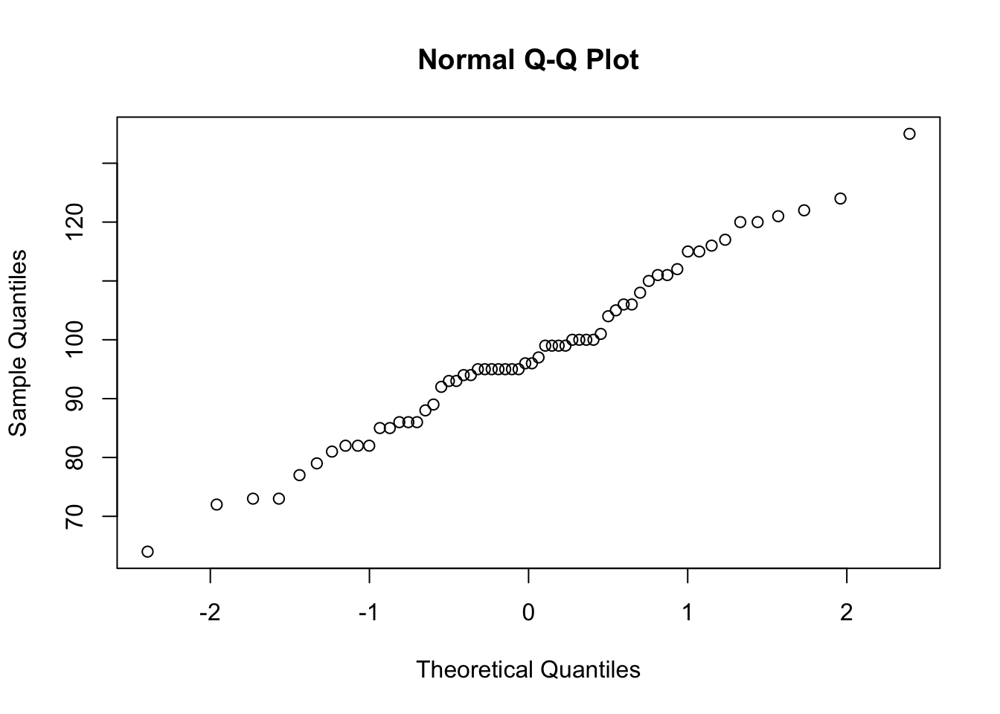
n <- nrow(iq)
mean <- mean(iq$IQscore)
sd <- sd(iq$IQscore)
se <- sd / sqrt(n)
q_val<- qt(p = 0.025, df = n-1)
mean + c(-1, 1)*se*abs(q_val)[1] 93.99302 101.50698Compare with t-test
t.test(iq$IQscore)$conf.int[1] 93.99302 101.50698
attr(,"conf.level")
[1] 0.95
- Install the libraries boot and simpleboot and load them (using the facilities under the tab Packages in R or RStudio, or using the commands in the R script.) Bootstrap the mean of the IQ scores, with R = 10000 resamples. Make a histogram and Normal quantile plot of the bootstrap distribution. Does the bootstrap distribution appear Normal? What is the bootstrap standard error? Give the bootstrap t 95% confidence interval.
Only need to do this once:
install.packages(c("boot", "simpleboot"))library(boot)
library(simpleboot)set.seed(12345)
bootresults <- one.boot(iq$IQscore, mean, R = 10000)
mean(bootresults$t); sd(bootresults$t)[1] 97.73412[1] 1.847751qqnorm(bootresults$t)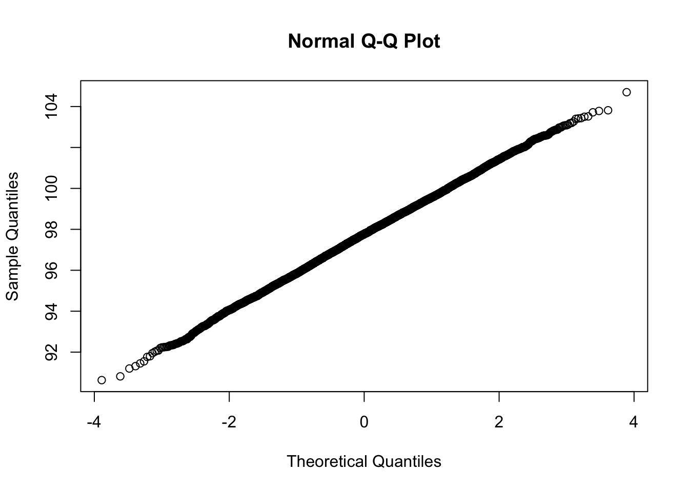
hist(bootresults$t)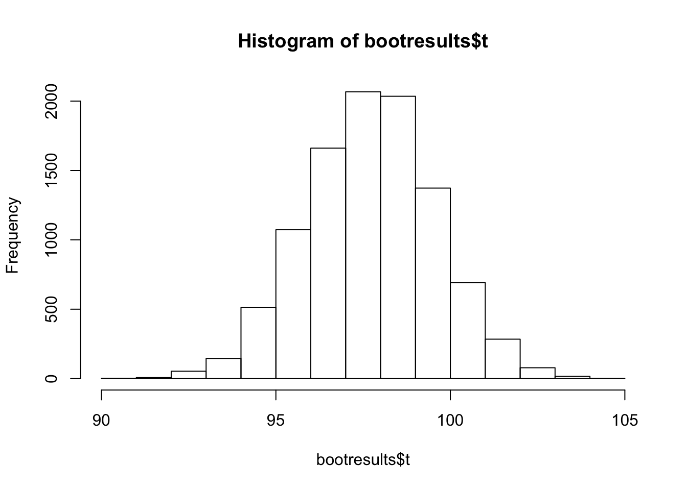
Looks nicely normally distributed.
Now for the 95% CI:
mean(bootresults$t) + c(-1,1)*qt(0.025, df = nrow(iq)-1, lower.tail = F)*sd(bootresults$t)/sqrt(nrow(iq))[1] 97.25680 98.21145
- Give the 95% confidence percentile, BCa, and basic intervals. How well do your five confidence intervals agree? Was bootstrapping needed to find a reasonable confidence interval, or was the formula-based confidence interval in (a) good enough?
boot.ci(bootresults)Warning in boot.ci(bootresults): bootstrap variances needed for studentized
intervalsBOOTSTRAP CONFIDENCE INTERVAL CALCULATIONS
Based on 10000 bootstrap replicates
CALL :
boot.ci(boot.out = bootresults)
Intervals :
Level Normal Basic
95% ( 94.14, 101.39 ) ( 94.15, 101.38 )
Level Percentile BCa
95% ( 94.12, 101.35 ) ( 94.08, 101.30 )
Calculations and Intervals on Original ScaleThe bootstrapping intervals agree, they are all a little narrower than the t-test based confidence interval, however the difference is small.
This is an (approximately) normally distributed vriable, so the t-test interval is accurate.
To illustrate the process, let’s perform a permutation test by hand for a small random subset of the DRP data (Example 16.11). Here are the data (different from those in the lecture): Treatment group 57 53 Control group 19 37 41 42 (a) Calculate the difference in means xtreatment − xcontrol between the two groups. This is the observed value of the statistic.
df <- data.frame(
treat = c("treat", "treat", "control", "control", "control", "control"),
x = c(57, 53, 19, 37, 41, 42)
)
diffx <- df %>%
group_by(treat) %>%
summarize(mean = mean(x)) %>%
pull(mean) %>%
diff()
diffx[1] 20.25
- Resample: randomly shuffle the 6 scores, where the two first scores will have the treatment (1), and the last 4 have control (0). What is the difference in group means for this resample?
set.seed(2)
df %>%
mutate(treat = sample(treat)) %>% # shuffle treat
group_by(treat) %>%
summarize(mean = mean(x)) %>% # calculate mean by group
pull(mean) %>%
diff() # get difference[1] 8.25
- Repeat step (b) 1000 times to get 1000 resamples and 1000 values of the statistic. (Obviously you will not do this 1000 times by hand. Do it a few times by hand until you understand the procedure, then proceed with R.) Make a table of the distribution of these 1000 values. This is the permutation distribution for your resamples.
npermutations = 1000
set.seed(2)
diffs <- numeric(npermutations)
for (i in 1:npermutations) {
diffs[i] <- df %>%
mutate(treat = sample(treat)) %>% # shuffle treat
group_by(treat) %>%
summarize(mean = mean(x)) %>% # calculate mean by group
pull(mean) %>%
diff() # get difference
}Look at the distribution of the differences
hist(diffs)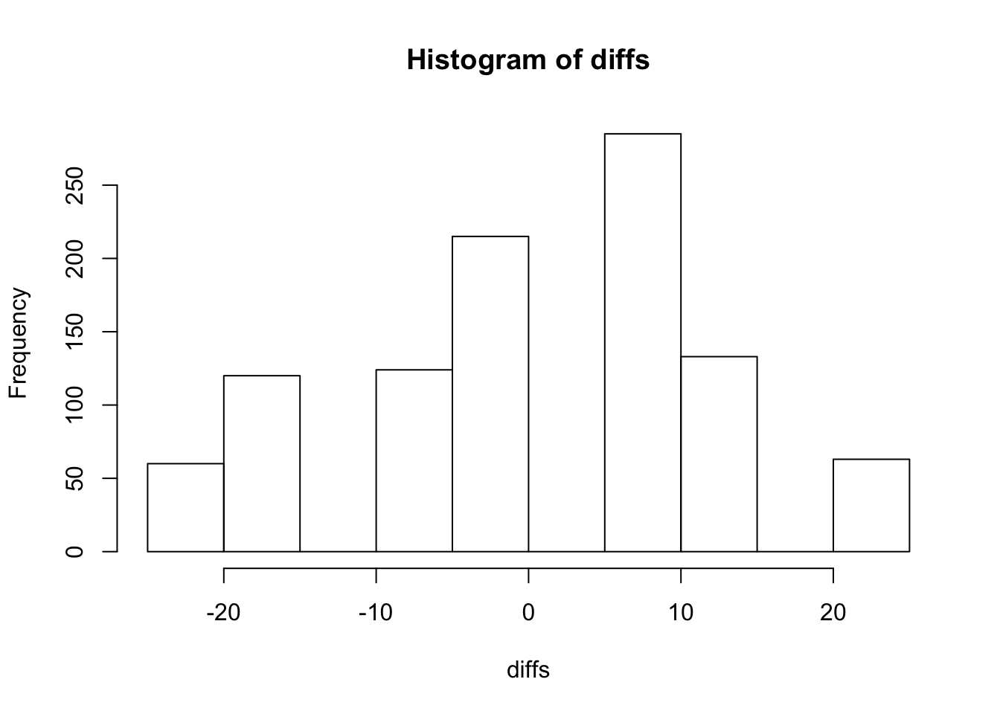
- What proportion of the 1000 statistic values were equal to or greater than the original value in part (a)? You have just estimated the one-sided P-value for the original 6 observations.
mean(diffs >=diffx)[1] 0.063
- For this small data set, there are only 15 possible permutations of the data. As a result, we can calculate the exact P-value by counting the number of permutations with a statistic value greater than or equal to the original value and then dividing by 15. What is the exact P-value here? How close was your estimate?
Create all permutations by making a matrix with all the possible positions in the data where treatment can be located
treat_positions <- combn(6,2)
treat_positions [,1] [,2] [,3] [,4] [,5] [,6] [,7] [,8] [,9] [,10] [,11] [,12] [,13]
[1,] 1 1 1 1 1 2 2 2 2 3 3 3 4
[2,] 2 3 4 5 6 3 4 5 6 4 5 6 5
[,14] [,15]
[1,] 4 5
[2,] 6 6Calculate differences
possible_differences <- apply(treat_positions, 2, function(pos) {
mean(df$x[pos]) - mean(df$x[-pos])
})
sort(possible_differences) [1] -20.25 -17.25 -16.50 -8.25 -5.25 -3.75 -3.00 0.00 5.25 8.25
[11] 8.25 9.00 11.25 12.00 20.25mean(possible_differences >= diffx)[1] 0.06666667The exact p-value is pretty close
The formal medical term for vitamin A in the blood is serum retinol. Serum retinol has various beneficial effects, such as protecting against fractures. Medical researchers working with children in Papua New Guinea asked whether recent infections reduce the level of serum retinol. They classified children as recently infected or not on the basis of other blood tests, then measured serum retinol. Of the 90 children in the sample, 55 had been recently infected. Dataset retinol.txt gives the serum retinol levels for both groups, in micromoles per liter. (a) The researchers are interested in the proportional reduction in serum retinol. Verify that the mean for infected children is 0.620 and that the mean for uninfected children is 0.778.
retinol <- read.table(fromParentDir("data/retinol.txt"), header = T)
str(retinol)'data.frame': 90 obs. of 2 variables:
$ retinol : num 0.59 1.08 0.88 0.62 0.46 0.39 1.44 1.04 0.67 0.86 ...
$ infected: int 0 0 0 0 0 0 0 0 0 0 ...retinol %>%
group_by(infected) %>%
summarize(mean(retinol))# A tibble: 2 x 2
infected `mean(retinol)`
<int> <dbl>
1 0 0.778
2 1 0.620ratio <- retinol %>%
group_by(infected) %>%
summarize(mean = mean(retinol)) %>%
pull(mean) %>%
(function(x) (x/lag(x))[2])
- There is no standard test for the null hypothesis that the ratio of the population means is 1. We can do a permutation test on the ratio of sample means. Carry out a one-sided test and report the P-value. Briefly describe the center and shape of the permutation distribution. Why do you expect the center to be close to 1?
First let’s calculate the number of possible permutations, to see if calculating all permutations is feasible
retinol %>%
group_by(infected) %>% # group by infected
summarize(n = n()) # count number of infected# A tibble: 2 x 2
infected n
<int> <int>
1 0 35
2 1 55choose(35+55, 55)[1] 1.132459e+25Getting all permutations is clearly infeasible, so let’s do 1000
nperm = 1000
ratios = numeric(nperm)
set.seed(2)
for (i in 1:nperm) {
ratios[i] <-
retinol %>%
mutate(shuff_intected = sample(infected)) %>%
group_by(shuff_intected) %>%
summarize(mean = mean(retinol)) %>%
pull(mean) %>%
(function(x) (x / lag(x))[2]) # divide each element by the previous, take second element (which is the fraction if x is 2 numbers)
}hist(ratios)Distributions looks pretty symmetric around 1, which is the null value for a ratio
qqnorm(ratios)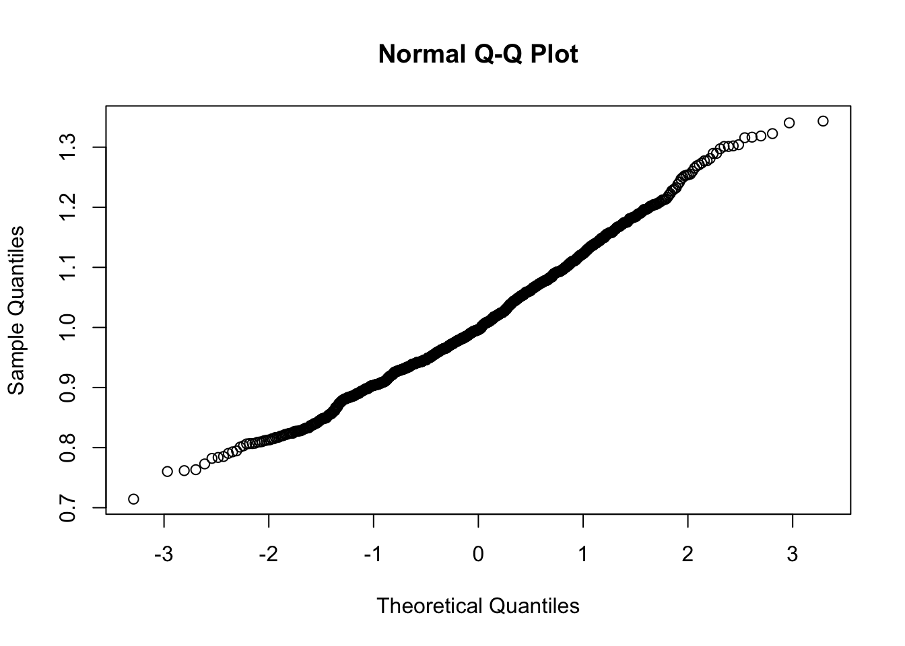
Pretty nice normal distribution
Now for the P-value
mean(ratios < ratio) [1] 0.011With plot for observed ratio
hist(ratios)
abline(v = ratio, lty = 2)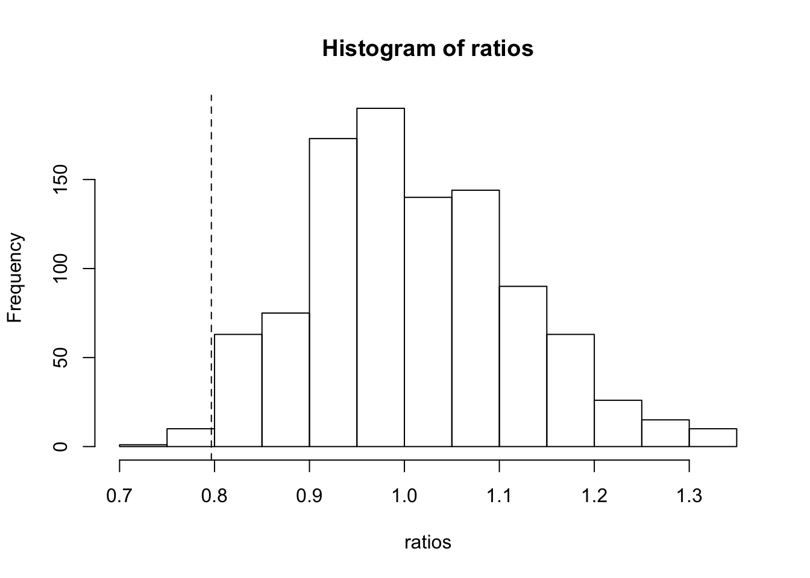
In the previous exercise we did a permutation test for the hypothesis “no difference between infected and uninfected children” using the ratio of mean serum retinol levels to measure “difference.” We might also want a bootstrap confidence interval for the ratio of population means for infected and uninfected children. Describe carefully how resampling is done for the permutation test and for the bootstrap, paying attention to the difference between the two resampling methods.
Permution tests are used to simulate a distribution for the null-hypothesis. For this unpaired case it means shuffling the outcome (infected), which are expected to depend on the determinant (retinol). Under the null-hypothesis there is no relationship between the determinant and the outcome, so each possible configuration of outcomes is equially likely to occur. A number of random configurations is simulated, and the test statistic is calculated for each permution. This gives the distribution of the null-hypothesis. Based on this distribution, we can see how probable it is to find a value for the statistic or more extreme, which is the exact definition of a p-value. So permutations give p-values
Bootstrapping simulates drawing random samples from the population, but uses the actual observed distribution in the sample as a proxy for the population distribution (which is usually unknown if you’re doing research). Drawing re-samples from this sample distribution and calculating the test statistic for each re-sample gives an idea of the range of possible values of the statistic for a sample of the given size. This distrubution of the sample statistic can be used to approximate the confidence interval, which can (loosely) be defined as the range of values which a sample test statistic is (e.g. 95%) likelily to fall in between, when taking many samples.
Does added calcium intake reduce the blood pressure of black men? In a randomized comparative double-blind trial, 10 men were given a calcium supplement for twelve weeks and 11 others received a placebo. Whether or not blood pressure dropped was recorded for each subject. Here are the data: Treatment Subjects Successes Proportion Calcium 10 6 0.60 Placebo 11 4 0.36 Total 21 10 0.48
calcium <- data.frame(
treatment = rep(c(1, 0), c(10, 11)),
success = rep(c(1, 0, 1, 0), c(6, 4, 4, 7))
)
calcium treatment success
1 1 1
2 1 1
3 1 1
4 1 1
5 1 1
6 1 1
7 1 0
8 1 0
9 1 0
10 1 0
11 0 1
12 0 1
13 0 1
14 0 1
15 0 0
16 0 0
17 0 0
18 0 0
19 0 0
20 0 0
21 0 0We want to use these sample data to test equality of the population proportions of successes. Carry out a permutation test. Describe the permutation distribution. The permutation test does not depend on a “nice” distribution shape. Give the P-value and report your conclusion.
The question here is to randomly divide 10 successes over 21 subjects.
The possible number of permutations:
choose(21, 10)[1] 352716This is doable.
We can get all the permutations by assigning 10 ‘rownumbers’ or positions for the successes in the 21 participants.
positions <- combn(21, 10)
positions[, 1:5] [,1] [,2] [,3] [,4] [,5]
[1,] 1 1 1 1 1
[2,] 2 2 2 2 2
[3,] 3 3 3 3 3
[4,] 4 4 4 4 4
[5,] 5 5 5 5 5
[6,] 6 6 6 6 6
[7,] 7 7 7 7 7
[8,] 8 8 8 8 8
[9,] 9 9 9 9 9
[10,] 10 11 12 13 14Let’s make sure that all treated participants are in the first 10 rows.
The the number of successes in the treatment group is the number of times a position of \(\leq 10\) happens in the permuted positions. Let’s call this \(n\), than the difference in ratios is \(\frac{n}{10}-\frac{10-n}{11}\)
diffs <- apply(positions, 2, function(position) {
n = sum(position <= 10)
(n/10) - ((10-n)/11)
})Look at the distribution
hist(diffs)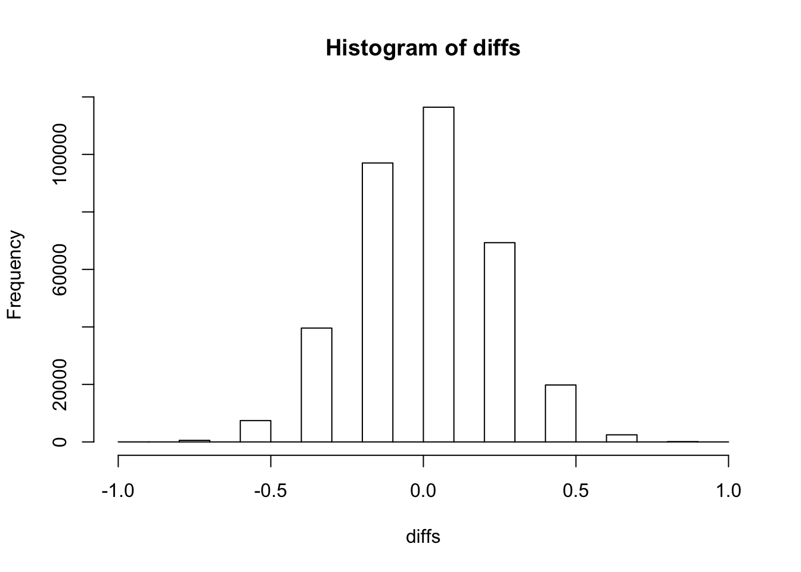
Compare with observed ratio to get a p-value
diffx <- 6/10 - 4 / 11
mean(diffx <= diffs)[1] 0.2599428Now check with pre-defined functions:
perm::permTS(calcium$success ~ calcium$treatment, alternative = "less", method = "exact.ce")
Exact Permutation Test (complete enumeration)
data: calcium$success by calcium$treatment
p-value = 0.2599
alternative hypothesis: true mean calcium$treatment=0 - mean calcium$treatment=1 is less than 0
sample estimates:
mean calcium$treatment=0 - mean calcium$treatment=1
-0.2363636 fisher.test(calcium$success, calcium$treatment, alternative = "greater")
Fisher's Exact Test for Count Data
data: calcium$success and calcium$treatment
p-value = 0.2599
alternative hypothesis: true odds ratio is greater than 1
95 percent confidence interval:
0.436804 Inf
sample estimates:
odds ratio
2.502462 Our manual calculation coincides with Fisher’s test and permTS method
Internally, permTS does something similar as we did with the permutations It creates a ‘cm’ matrix with all possible combinations, the dimensions of this matrix is 352716x21. Check the code with:
View(permute:::permTS.default) which calls: View(permute:::twosample.exact.ce) which calls: View(permute:::chooseMatrix)
Now let’s do a more direct method, exploiting the fact that every combination of \(n\) successes in the treatment group will yield the same results. Note: this only works when ‘success’ is a binary variable, it would not work in the more general case for continous outcomes.
n1 = 10
n2 = 11
ns = 10
diffx[1] 0.2363636perm_twogroup <- function(target, n1, n2, ns) {
total_combinations <- choose(n1+n2, ns)
combinations <- integer(ns+1)
differences <- numeric(ns+1)
for (n in 0:ns) {
i = n+1
difference = n / n1 - (ns-n) / n2
ncombinations = choose(n1, n)*choose(n2, ns-n)
differences[i] = difference
combinations[i]= ncombinations
}
sum(combinations[differences>=target]) / total_combinations
}
perm_twogroup(diffx, n1, n2, ns)[1] 0.2599428Lets compare computation speed:
system.time(perm::permTS(calcium$success ~ calcium$treatment, alternative = "less", method = "exact.ce")) user system elapsed
2.797 0.106 2.937 system.time(fisher.test(calcium$success, calcium$treatment, alternative = "greater")) user system elapsed
0.001 0.000 0.001 system.time(perm_twogroup(diffx, n1, n2, ns)) user system elapsed
0.001 0.000 0.000 We can see that permTS is extremely slow, compared to fisher.test and the manual exact method.
We will have a closer look at the data from the lecture, on remission times for leukemia:
Read in the dataset leukaemia.txt (saved as a flat text file), changing your working directory first or adding the path name to the file name:
leuk<-read.table(fromParentDir("data/leukaemia.txt"), header = TRUE)
- Fit five models (name them fit0 – fit4) with the following predictor variables: none (intercept only), GROUP, logWBCC, GROUP and logWBCC, GROUP*logWBCC. fit0<-coxph(Surv(TIME, STATUS)~1, data=leuk) etc.
require(survival)
fit0 <- coxph(Surv(TIME, STATUS) ~ 1, data = leuk)
fit1 <- coxph(Surv(TIME, STATUS) ~ GROUP, data = leuk)
fit2 <- coxph(Surv(TIME, STATUS) ~ logWBCC, data = leuk)
fit3 <- coxph(Surv(TIME, STATUS) ~ GROUP + logWBCC, data = leuk)
fit4 <- coxph(Surv(TIME, STATUS) ~ GROUP * logWBCC, data = leuk)
- Ask for the log-likelihood of the empty model: fit0$loglik Ask for the summaries of the 4 models fit1-fit4, and for their log-likelihoods.
fit0$loglik[1] -93.18427Let’s combine the summaries of the models by converting them to data.frames with broom, and bind them together with rbindlist
fits <- list(fit1, fit2, fit3, fit4)
summaries <- map(fits, broom::tidy) %>%
data.table::rbindlist(idcol = "model")
summaries model term estimate std.error statistic
1: 1 GROUPtreatmnt -1.5721251 0.4123967 -3.8121670
2: 2 logWBCC 1.6464371 0.2979940 5.5250677
3: 3 GROUPtreatmnt -1.3860755 0.4247984 -3.2629020
4: 3 logWBCC 1.6908904 0.3358976 5.0339462
5: 4 GROUPtreatmnt -2.3749100 1.7054652 -1.3925291
6: 4 logWBCC 1.5548945 0.3986606 3.9002964
7: 4 GROUPtreatmnt:logWBCC 0.3175219 0.5257887 0.6038963
p.value conf.low conf.high
1: 1.377538e-04 -2.3804079 -0.7638424
2: 3.293585e-08 1.0623795 2.2304946
3: 1.102776e-03 -2.2186651 -0.5534860
4: 4.804846e-07 1.0325432 2.3492376
5: 1.637622e-01 -5.7175604 0.9677404
6: 9.607498e-05 0.7735341 2.3362550
7: 5.459126e-01 -0.7130050 1.3480487
- Interpret the coefficients of the models 1 through 4. What are you assuming with these models about the effect of group and logWBCC on the hazard of relapse?
require(data.table)
summaries[order(term)] model term estimate std.error statistic
1: 1 GROUPtreatmnt -1.5721251 0.4123967 -3.8121670
2: 3 GROUPtreatmnt -1.3860755 0.4247984 -3.2629020
3: 4 GROUPtreatmnt -2.3749100 1.7054652 -1.3925291
4: 4 GROUPtreatmnt:logWBCC 0.3175219 0.5257887 0.6038963
5: 2 logWBCC 1.6464371 0.2979940 5.5250677
6: 3 logWBCC 1.6908904 0.3358976 5.0339462
7: 4 logWBCC 1.5548945 0.3986606 3.9002964
p.value conf.low conf.high
1: 1.377538e-04 -2.3804079 -0.7638424
2: 1.102776e-03 -2.2186651 -0.5534860
3: 1.637622e-01 -5.7175604 0.9677404
4: 5.459126e-01 -0.7130050 1.3480487
5: 3.293585e-08 1.0623795 2.2304946
6: 4.804846e-07 1.0325432 2.3492376
7: 9.607498e-05 0.7735341 2.3362550In models 1 and 3 there is a significant group effect of GROUP (decreased hazard). In all models, logWBCC seems to have a significant effect. The interaction term of model 4 can be left out.
Estimates higher than 0 correspond with increased hazards. The exponent of this estimate gives the hazard ratio (leaving the rest the same)
Assumptions are proportional hazards, so the effects of group and logWBCC on the hazard do not depend on time (the hazard ratios are constant in time).
- Calculate likelihood ratio test values and AIC’s (assume that the empty model, fit0, uses no degrees of freedom)
anova(fit0, fit1, fit2, fit3, fit4)Analysis of Deviance Table
Cox model: response is Surv(TIME, STATUS)
Model 1: ~ 1
Model 2: ~ GROUP
Model 3: ~ logWBCC
Model 4: ~ GROUP + logWBCC
Model 5: ~ GROUP * logWBCC
loglik Chisq Df P(>|Chi|)
1 -93.184
2 -85.008 16.3517 1 5.261e-05 ***
3 -75.763 18.4899 0 < 2.2e-16 ***
4 -69.828 11.8708 1 0.0005702 ***
5 -69.648 0.3594 1 0.5488232
---
Signif. codes: 0 '***' 0.001 '**' 0.01 '*' 0.05 '.' 0.1 ' ' 1AIC(fit0, fit1, fit2, fit3, fit4)Warning in is.na(coefficients(object)): is.na() applied to non-(list or
vector) of type 'NULL' df AIC
fit0 0 NA
fit1 1 172.0168
fit2 1 153.5270
fit3 2 143.6562
fit4 3 145.2968The lowest AIC is for fit3, both terms but no interaction. We already observed earlier on that the interaction term in model 4 was not significant, so it must be left out (AIC penalizes extra terms)
- Also compare the models via the likelihood ratio test, with commands like anova(fit1, fit3, test=“Chisq”) Note that not all comparisons are possible.
anova(fit1, fit2, test = "Chisq")Analysis of Deviance Table
Cox model: response is Surv(TIME, STATUS)
Model 1: ~ GROUP
Model 2: ~ logWBCC
loglik Chisq Df P(>|Chi|)
1 -85.008
2 -75.763 18.49 0 < 2.2e-16 ***
---
Signif. codes: 0 '***' 0.001 '**' 0.01 '*' 0.05 '.' 0.1 ' ' 1The anova gives a result, but fit2 is not nested within fit1, so it’s meaningless.s
- Decide which model is best. Interpret the coefficients of this best model.
We already saw that model 3 has the lowest AIC, so we will pick that one
summary(fit3)Call:
coxph(formula = Surv(TIME, STATUS) ~ GROUP + logWBCC, data = leuk)
n= 42, number of events= 30
coef exp(coef) se(coef) z Pr(>|z|)
GROUPtreatmnt -1.3861 0.2501 0.4248 -3.263 0.0011 **
logWBCC 1.6909 5.4243 0.3359 5.034 4.8e-07 ***
---
Signif. codes: 0 '***' 0.001 '**' 0.01 '*' 0.05 '.' 0.1 ' ' 1
exp(coef) exp(-coef) lower .95 upper .95
GROUPtreatmnt 0.2501 3.9991 0.1088 0.5749
logWBCC 5.4243 0.1844 2.8082 10.4776
Concordance= 0.852 (se = 0.062 )
Rsquare= 0.671 (max possible= 0.988 )
Likelihood ratio test= 46.71 on 2 df, p=7.187e-11
Wald test = 33.6 on 2 df, p=5.061e-08
Score (logrank) test = 46.07 on 2 df, p=9.921e-11Treatment reduces the hazard, logWBCC increases the hazard
Researchers are interested in the influence of age nephrectomy on the survival of hypernephroma patients. Read the data below into R from the file nephrect.txt:
neph<-read.table(fromParentDir("data/nephrect.txt"), header = TRUE)
str(neph)'data.frame': 36 obs. of 4 variables:
$ survtime: int 9 6 21 15 8 17 12 104 9 56 ...
$ status : int 1 1 1 1 1 1 1 0 1 1 ...
$ nephrect: int 0 0 0 0 0 0 0 1 1 1 ...
$ age : int 1 1 1 2 2 2 3 1 1 1 ...Survival times of 36 hypernephroma patients classified according to age group and whether or not they have had a nephrectomy.
- Make Kaplan-Meier plots for the three age groups, and test whether there is an effect of age on survival time (not taking nephrectomy into account) using the Log-rank test.
plot(survfit(Surv(survtime, status)~age, data = neph))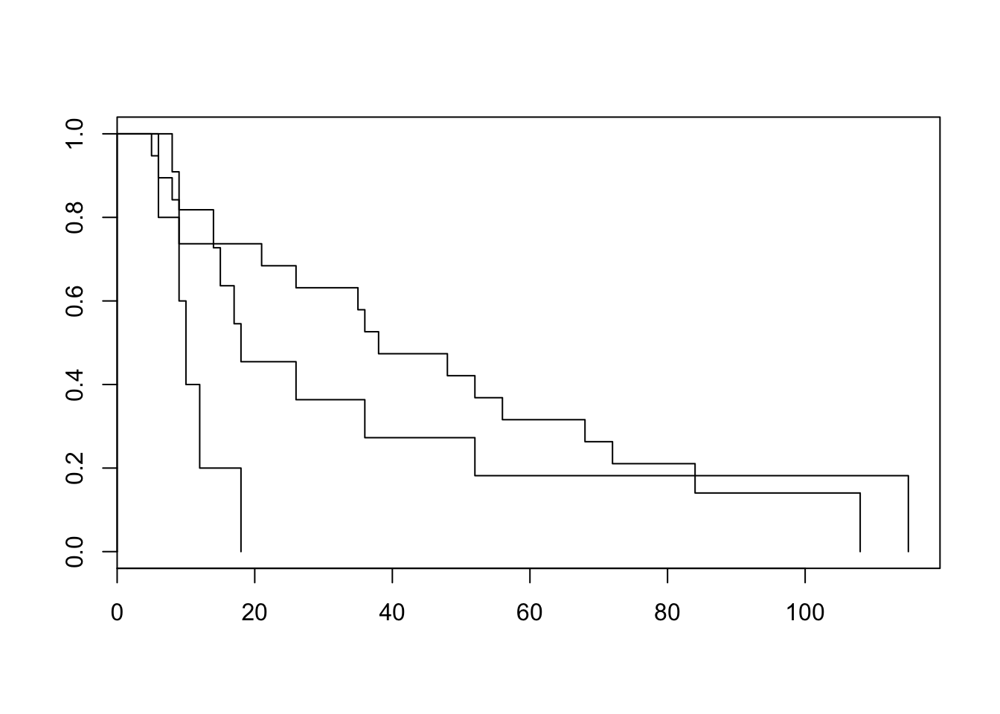
survdiff(Surv(survtime, status)~age, data = neph)Call:
survdiff(formula = Surv(survtime, status) ~ age, data = neph)
N Observed Expected (O-E)^2/E (O-E)^2/V
age=1 19 17 19.59 0.3424 1.0150
age=2 12 10 10.77 0.0554 0.0952
age=3 5 5 1.64 6.9042 8.2183
Chisq= 8.3 on 2 degrees of freedom, p= 0.0161 According to the log-rank test, there is a significant difference in survival between age groups. (see documentation: the default for rho is 0, which corresponds to the log-rank test)
- Test whether there is an effect of age on survival time (not taking nephrectomy into account) using the Likelihood Ratio test and the Wald test from a Cox Proportional Hazards regression model. (Define AGE as a categorical variable.) Compare this result to the log-rank test.
fit1 <- coxph(Surv(survtime, status) ~ factor(age), data = neph)
summary(fit1)Call:
coxph(formula = Surv(survtime, status) ~ factor(age), data = neph)
n= 36, number of events= 32
coef exp(coef) se(coef) z Pr(>|z|)
factor(age)2 0.1010 1.1063 0.4204 0.240 0.81004
factor(age)3 1.5144 4.5467 0.5807 2.608 0.00911 **
---
Signif. codes: 0 '***' 0.001 '**' 0.01 '*' 0.05 '.' 0.1 ' ' 1
exp(coef) exp(-coef) lower .95 upper .95
factor(age)2 1.106 0.9039 0.4853 2.522
factor(age)3 4.547 0.2199 1.4569 14.189
Concordance= 0.602 (se = 0.054 )
Rsquare= 0.148 (max possible= 0.993 )
Likelihood ratio test= 5.79 on 2 df, p=0.05542
Wald test = 7.09 on 2 df, p=0.02881
Score (logrank) test = 8.4 on 2 df, p=0.01498The log-rank gives the lowest p-value. Likelihood ratio test is not significant
- From the Cox PH output, give the hazard ratio of age class 2 vs 1 and 3 vs 1. Give the 95% confidence intervals for these hazard ratios. Interpret the results.
broom::tidy(fit1) %>%
mutate_at(.vars = c("estimate", "conf.low", "conf.high"), exp) term estimate std.error statistic p.value conf.low
1 factor(age)2 1.106331 0.4203911 0.2403689 0.810044275 0.4853415
2 factor(age)3 4.546690 0.5806640 2.6080477 0.009106028 1.4569116
conf.high
1 2.521869
2 14.189183Hazard ratios are the estimates (exponentiated as required). For the 2 vs 1 hazard ratio, the confidence interval includes the null value of 1, which coincides with the p.value of > 0.05
- Now take only nephrectomy as the explanatory variable. Make Kaplan-Meier plots for the two groups, test for a difference in nephrectomy status using the log-rank test.
plot(survfit(Surv(survtime, status)~nephrect, data = neph))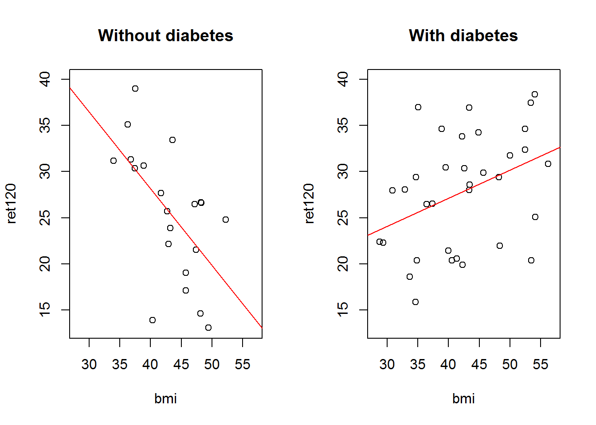
survdiff(Surv(survtime, status)~nephrect, data = neph)Call:
survdiff(formula = Surv(survtime, status) ~ nephrect, data = neph)
N Observed Expected (O-E)^2/E (O-E)^2/V
nephrect=0 7 7 2.46 8.408 10.5
nephrect=1 29 25 29.54 0.699 10.5
Chisq= 10.5 on 1 degrees of freedom, p= 0.00122
- Test whether there is an effect of nephrectomy using the likelihood ratio and Wald tests in a Cox PH model. Compare this result to the log-rank test. Give the hazard ratio of no nephrectomy vs nephrectomy. Calculate a 95% confidence interval for this hazard ratio.
fit2 <- coxph(Surv(survtime, status)~nephrect, data = neph)
summary(fit2)Call:
coxph(formula = Surv(survtime, status) ~ nephrect, data = neph)
n= 36, number of events= 32
coef exp(coef) se(coef) z Pr(>|z|)
nephrect -1.4941 0.2245 0.5070 -2.947 0.00321 **
---
Signif. codes: 0 '***' 0.001 '**' 0.01 '*' 0.05 '.' 0.1 ' ' 1
exp(coef) exp(-coef) lower .95 upper .95
nephrect 0.2245 4.455 0.0831 0.6063
Concordance= 0.598 (se = 0.037 )
Rsquare= 0.19 (max possible= 0.993 )
Likelihood ratio test= 7.56 on 1 df, p=0.005955
Wald test = 8.69 on 1 df, p=0.003208
Score (logrank) test = 10.31 on 1 df, p=0.00132exp(coef(fit2)) nephrect
0.2244505 exp(confint((fit2))) 2.5 % 97.5 %
nephrect 0.08309507 0.6062696Nefrectomy seems to have a lower hazard of dying
- Test for a difference in nephrectomy status using a Cox PH model again, but now for each of the three original age classes separately (hint: make 3 new data frames with selections of age groups). Does the effect of nephrecto¬my appear to be the same in each age class? (Optional: how would you test this, using Cox PH?)
Let’s do this with dplyr function group_by
fits <- neph %>%
group_by(age) %>%
do(fit = coxph(Surv(survtime, status)~nephrect, data = .))
broom::tidy(fits, fit) # A tibble: 3 x 8
# Groups: age [3]
age term estimate std.error statistic p.value conf.low conf.high
<int> <chr> <dbl> <dbl> <dbl> <dbl> <dbl> <dbl>
1 1 nephrect -2.00 0.827 -2.42 0.0156 -3.62 -0.379
2 2 nephrect -1.71 0.922 -1.86 0.0629 -3.52 0.0923
3 3 nephrect 0.370 1.19 0.311 0.755 -1.96 2.70 The estimate for nephrectomy is different in the different age groups, however, the confidence intervals all overlap.
We can test this by using age as an interaction
fit2 <- coxph(Surv(survtime, status)~nephrect*factor(age), data = neph)
summary(fit2)Call:
coxph(formula = Surv(survtime, status) ~ nephrect * factor(age),
data = neph)
n= 36, number of events= 32
coef exp(coef) se(coef) z Pr(>|z|)
nephrect -1.996683 0.135785 0.729653 -2.736 0.00621 **
factor(age)2 -0.032209 0.968304 0.836657 -0.038 0.96929
factor(age)3 0.002361 1.002364 1.179871 0.002 0.99840
nephrect:factor(age)2 0.002939 1.002944 0.971967 0.003 0.99759
nephrect:factor(age)3 2.140991 8.507868 1.342752 1.594 0.11083
---
Signif. codes: 0 '***' 0.001 '**' 0.01 '*' 0.05 '.' 0.1 ' ' 1
exp(coef) exp(-coef) lower .95 upper .95
nephrect 0.1358 7.3646 0.03249 0.5675
factor(age)2 0.9683 1.0327 0.18787 4.9909
factor(age)3 1.0024 0.9976 0.09925 10.1236
nephrect:factor(age)2 1.0029 0.9971 0.14926 6.7393
nephrect:factor(age)3 8.5079 0.1175 0.61216 118.2424
Concordance= 0.653 (se = 0.057 )
Rsquare= 0.354 (max possible= 0.993 )
Likelihood ratio test= 15.75 on 5 df, p=0.007586
Wald test = 14.94 on 5 df, p=0.01061
Score (logrank) test = 19.98 on 5 df, p=0.00126Interaction term is indeed not significant
- Check the Cox PH assumption for AGE by building a model with NEPHRECT as explanatory variable and AGE as stratum variable. Get a log-minus-log plot and check whether the resulting log cumulative hazard functions are approximately parallel.
fit3 <- coxph(Surv(survtime, status)~nephrect + strata(factor(age)), data = neph)
summary(fit3)Call:
coxph(formula = Surv(survtime, status) ~ nephrect + strata(factor(age)),
data = neph)
n= 36, number of events= 32
coef exp(coef) se(coef) z Pr(>|z|)
nephrect -1.3077 0.2705 0.5399 -2.422 0.0154 *
---
Signif. codes: 0 '***' 0.001 '**' 0.01 '*' 0.05 '.' 0.1 ' ' 1
exp(coef) exp(-coef) lower .95 upper .95
nephrect 0.2705 3.698 0.09387 0.7792
Concordance= 0.607 (se = 0.055 )
Rsquare= 0.14 (max possible= 0.962 )
Likelihood ratio test= 5.42 on 1 df, p=0.0199
Wald test = 5.87 on 1 df, p=0.01543
Score (logrank) test = 6.57 on 1 df, p=0.01035The fast way:
plot(survfit(fit3), col = c("red", "blue", "black"), fun = "cloglog")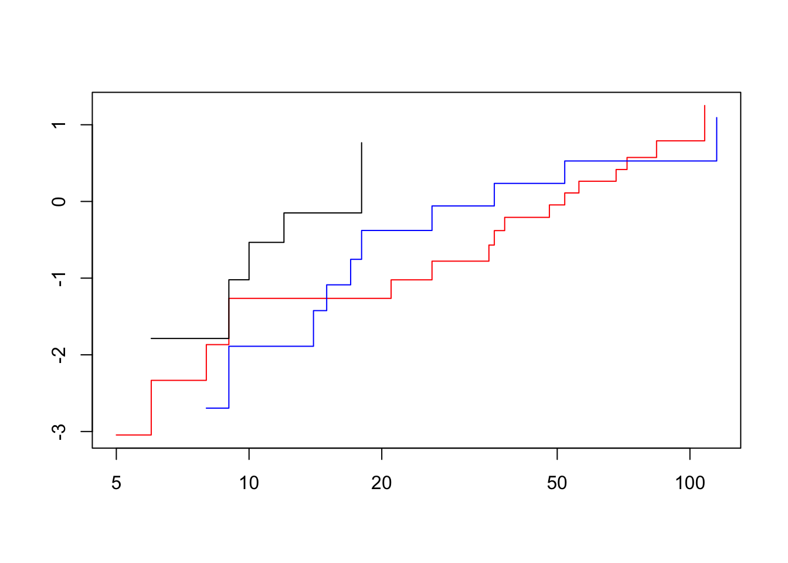
The lines cross, so this vialates our assumption of proportional hazards
Read the data file myeloma.dat (a comma-separated file with headers at the top) into R and attach it:
myel<-read.table(fromParentDir("data/myeloma.dat"), header = TRUE)
str(myel)'data.frame': 48 obs. of 10 variables:
$ patient: int 1 2 3 4 5 6 7 8 9 10 ...
$ time : int 13 52 6 40 10 7 66 10 10 14 ...
$ status : int 1 0 1 1 1 0 1 0 1 1 ...
$ age : int 66 66 53 69 65 57 52 60 70 70 ...
$ sex : int 1 1 0 1 1 0 1 1 1 1 ...
$ bun : int 25 13 15 10 20 12 21 41 37 40 ...
$ ca : int 10 11 13 10 10 8 10 9 12 11 ...
$ hb : num 14.6 12 11.4 10.2 13.2 9.9 12.8 14 7.5 10.6 ...
$ pc : int 18 100 33 30 66 45 11 70 47 27 ...
$ bj : int 1 0 1 1 0 0 1 1 0 0 ...The dataset contains the following variables on 48 patients diagnosed with multiple myeloma: Variable Description survtime survival time from diagnosis multiple myeloma (months) status censoring status (0=censored, 1=death from multiple myeloma) age age (years) sex sex (1=male, 2=female) bun blood urea nitrogen ca serum calcium hb haemoglobin pc percentage plasma cells in bone marrow bj Bence-Jones protein in urine
The object of the research is to determine the best fitting Cox proportional hazards model to explain death from multiple myeloma.
- First, get some descriptive statistics on the data. Then get a sense of the individual variables’ effect on survival, by fitting a Cox PH model on each of the explanatory variables separately.
summary(myel) patient time status age
Min. : 1.00 Min. : 1.00 Min. :0.00 Min. :50.00
1st Qu.:12.75 1st Qu.: 6.75 1st Qu.:0.75 1st Qu.:58.75
Median :24.50 Median :14.50 Median :1.00 Median :62.50
Mean :24.50 Mean :23.38 Mean :0.75 Mean :62.90
3rd Qu.:36.25 3rd Qu.:37.00 3rd Qu.:1.00 3rd Qu.:68.25
Max. :48.00 Max. :91.00 Max. :1.00 Max. :77.00
sex bun ca hb
Min. :0.0000 Min. : 6.00 Min. : 8.000 Min. : 4.90
1st Qu.:0.0000 1st Qu.: 13.75 1st Qu.: 9.000 1st Qu.: 8.65
Median :1.0000 Median : 21.00 Median :10.000 Median :10.20
Mean :0.6042 Mean : 33.92 Mean : 9.938 Mean :10.25
3rd Qu.:1.0000 3rd Qu.: 39.25 3rd Qu.:10.000 3rd Qu.:12.57
Max. :1.0000 Max. :172.00 Max. :15.000 Max. :14.60
pc bj
Min. : 3.00 Min. :0.0000
1st Qu.: 21.25 1st Qu.:0.0000
Median : 33.00 Median :0.0000
Mean : 42.94 Mean :0.3125
3rd Qu.: 63.00 3rd Qu.:1.0000
Max. :100.00 Max. :1.0000 Let’s model all variables separately (except for patient, time and status)
vars <- setdiff(colnames(myel), c("patient", "time", "status"))
fits <- map(vars, .f = function(var) {
fit = coxph(Surv(time, status)~get(var), data = myel)
})
names(fits) <- vars
fits_summary <- map_dfr(fits, broom::tidy, .id = "var")
fits_summary var term estimate std.error statistic p.value
1 age get(var) 0.010370389 0.027974456 0.3707092 0.710854121
2 sex get(var) -0.064606144 0.354630810 -0.1821786 0.855442567
3 bun get(var) 0.020151980 0.005726557 3.5190396 0.000433112
4 ca get(var) -0.088886279 0.132472799 -0.6709776 0.502234810
5 hb get(var) -0.134673527 0.059294189 -2.2712770 0.023130216
6 pc get(var) 0.001587994 0.005680465 0.2795535 0.779820101
7 bj get(var) -0.553957353 0.387880839 -1.4281637 0.153244733
conf.low conf.high
1 -0.044458538 0.06519932
2 -0.759669760 0.63045747
3 0.008928135 0.03137582
4 -0.348528193 0.17075564
5 -0.250888002 -0.01845905
6 -0.009545514 0.01272150
7 -1.314189828 0.20627512
- Now, fit an empty model (no explanatory variables), and use the forward method (use the add1() function, the option test=”Chisq” for a likelihood ratio test, and the scope option to indicate which variables may be included) to build a final model.
fit0 <- coxph(Surv(time, status)~1, data = myel)
add1(fit0, scope = vars, test = "Chisq")Warning in is.na(fit$coefficients): is.na() applied to non-(list or vector)
of type 'NULL'Single term additions
Model:
Surv(time, status) ~ 1
Df AIC LRT Pr(>Chi)
<none> 214.68
age 1 216.54 0.1378 0.710431
sex 1 216.65 0.0330 0.855821
bun 1 207.32 9.3624 0.002215 **
ca 1 216.20 0.4746 0.490884
hb 1 211.66 5.0169 0.025101 *
pc 1 216.60 0.0773 0.780977
bj 1 214.51 2.1680 0.140913
---
Signif. codes: 0 '***' 0.001 '**' 0.01 '*' 0.05 '.' 0.1 ' ' 1fit1 <- coxph(Surv(time, status)~bun, data = myel)
add1(fit1, scope = vars, test = "Chisq")Single term additions
Model:
Surv(time, status) ~ bun
Df AIC LRT Pr(>Chi)
<none> 207.32
age 1 209.32 0.0000 0.99531
sex 1 209.30 0.0144 0.90438
bun 0 207.32 0.0000
ca 1 209.28 0.0398 0.84194
hb 1 204.70 4.6171 0.03165 *
pc 1 209.04 0.2805 0.59635
bj 1 204.99 4.3274 0.03750 *
---
Signif. codes: 0 '***' 0.001 '**' 0.01 '*' 0.05 '.' 0.1 ' ' 1fit2 <- coxph(Surv(time, status)~bun+hb, data = myel)
add1(fit2, scope = vars, test = "Chisq")Single term additions
Model:
Surv(time, status) ~ bun + hb
Df AIC LRT Pr(>Chi)
<none> 204.70
age 1 206.45 0.24630 0.6197
sex 1 206.31 0.39250 0.5310
bun 0 204.70 0.00000
ca 1 206.70 0.00067 0.9794
hb 0 204.70 0.00000
pc 1 206.47 0.22516 0.6351
bj 1 203.90 2.79772 0.0944 .
---
Signif. codes: 0 '***' 0.001 '**' 0.01 '*' 0.05 '.' 0.1 ' ' 1No more significant improvements
- The re¬searchers also wish to know whether the effects of the risk factors might be modified by the age or sex of a patient, so, in the final model, test for possible interactions with these two. Note: to fit the interaction term you will also have to fit the main effect (age or sex).
fit3 <- coxph(Surv(time, status)~(bun+hb)*(age + sex), data = myel)
summary(fit3)Call:
coxph(formula = Surv(time, status) ~ (bun + hb) * (age + sex),
data = myel)
n= 48, number of events= 36
coef exp(coef) se(coef) z Pr(>|z|)
bun -0.0005735 0.9994266 0.0402039 -0.014 0.989
hb -0.3425636 0.7099480 0.6870670 -0.499 0.618
age -0.0640206 0.9379857 0.1125184 -0.569 0.569
sex 0.2781463 1.3206795 1.4752258 0.189 0.850
bun:age 0.0003291 1.0003291 0.0006804 0.484 0.629
bun:sex 0.0031629 1.0031679 0.0120207 0.263 0.792
hb:age 0.0030344 1.0030391 0.0104302 0.291 0.771
hb:sex -0.0151251 0.9849887 0.1445146 -0.105 0.917
exp(coef) exp(-coef) lower .95 upper .95
bun 0.9994 1.0006 0.9237 1.081
hb 0.7099 1.4086 0.1847 2.729
age 0.9380 1.0661 0.7524 1.169
sex 1.3207 0.7572 0.0733 23.796
bun:age 1.0003 0.9997 0.9990 1.002
bun:sex 1.0032 0.9968 0.9798 1.027
hb:age 1.0030 0.9970 0.9827 1.024
hb:sex 0.9850 1.0152 0.7420 1.308
Concordance= 0.675 (se = 0.06 )
Rsquare= 0.275 (max possible= 0.989 )
Likelihood ratio test= 15.46 on 8 df, p=0.05081
Wald test = 17.62 on 8 df, p=0.02428
Score (logrank) test = 21.28 on 8 df, p=0.006433There seems to be no significant interaction
drop1(fit3)Single term deletions
Model:
Surv(time, status) ~ (bun + hb) * (age + sex)
Df AIC
<none> 215.22
bun:age 1 213.45
bun:sex 1 213.29
hb:age 1 213.31
hb:sex 1 213.23Dropping the interactions improves the model, so final model is model 2
summary(fit2)Call:
coxph(formula = Surv(time, status) ~ bun + hb, data = myel)
n= 48, number of events= 36
coef exp(coef) se(coef) z Pr(>|z|)
bun 0.020043 1.020245 0.005816 3.446 0.000569 ***
hb -0.134952 0.873758 0.061956 -2.178 0.029391 *
---
Signif. codes: 0 '***' 0.001 '**' 0.01 '*' 0.05 '.' 0.1 ' ' 1
exp(coef) exp(-coef) lower .95 upper .95
bun 1.0202 0.9802 1.0087 1.0319
hb 0.8738 1.1445 0.7738 0.9866
Concordance= 0.67 (se = 0.06 )
Rsquare= 0.253 (max possible= 0.989 )
Likelihood ratio test= 13.98 on 2 df, p=0.0009213
Wald test = 16.11 on 2 df, p=0.0003173
Score (logrank) test = 19.54 on 2 df, p=5.712e-05bun increases the hazard of dying (see exp(coef) for hazard ratio) hb decreases the hazard of dying (see exp(coef) for hazard ratio)
This exercise is a repeat of exercise 2, but in SPSS. Read the data from exercise 2 into SPSS (File, Read Text Data) from the file NEPHRECT.TXT.
This one was skipped
This exercise is a repeat of exercise 3, but in SPSS. Open the data file MYELOMA.POR. Use Utilities, Variables… to study the meaning of the variables in the data file.
This one was skipped
We will start by reproducing the results of this morning’s lecture concerning the milk protein data: Start R, load the library nlme and access the data set Milk:
library(nlme)
data(Milk)
summary(Milk) protein Time Cow Diet
Min. :2.450 Min. : 1.000 B02 : 19 barley :425
1st Qu.:3.200 1st Qu.: 5.000 B17 : 19 barley+lupins:459
Median :3.410 Median : 9.000 B24 : 19 lupins :453
Mean :3.422 Mean : 9.185 B09 : 19
3rd Qu.:3.630 3rd Qu.:13.000 B11 : 19
Max. :4.590 Max. :19.000 B05 : 19
(Other):1223 In our analysis we will at first confine ourselves to time points 1 and 2:
Milk12<-Milk[Milk$Time<3,]
summary(Milk12) protein Time Cow Diet
Min. :2.690 Min. :1.000 B04 : 2 barley :49
1st Qu.:3.380 1st Qu.:1.000 B14 : 2 barley+lupins:54
Median :3.660 Median :1.000 B03 : 2 lupins :54
Mean :3.684 Mean :1.497 B02 : 2
3rd Qu.:3.980 3rd Qu.:2.000 B16 : 2
Max. :4.590 Max. :2.000 B17 : 2
(Other):145 To calculate the mean for protein type the command
If we want to calculate the mean for the different weeks we can make use of the tapply function
Or use dplyr
tapply(Milk12$protein,Milk12$Time,mean) 1 2
3.834051 3.532692 Milk12 %>%
group_by(Time) %>%
summarize(mean(protein))# A tibble: 2 x 2
Time `mean(protein)`
<dbl> <dbl>
1 1.00 3.83
2 2.00 3.53To avoid that we have to include the name of the dataset every time we name a variable, we will attach the data set to the search list:
Let’s not do this
So now R will also look in the dataset Milk12 to look for objects that you use in your commands. So after attaching the dataset it will suffice to write
Make a “spaghetti plot” of the protein data for weeks 1 and 2:
with(Milk12,
interaction.plot(x.factor=Time,trace.factor=Cow,response=protein))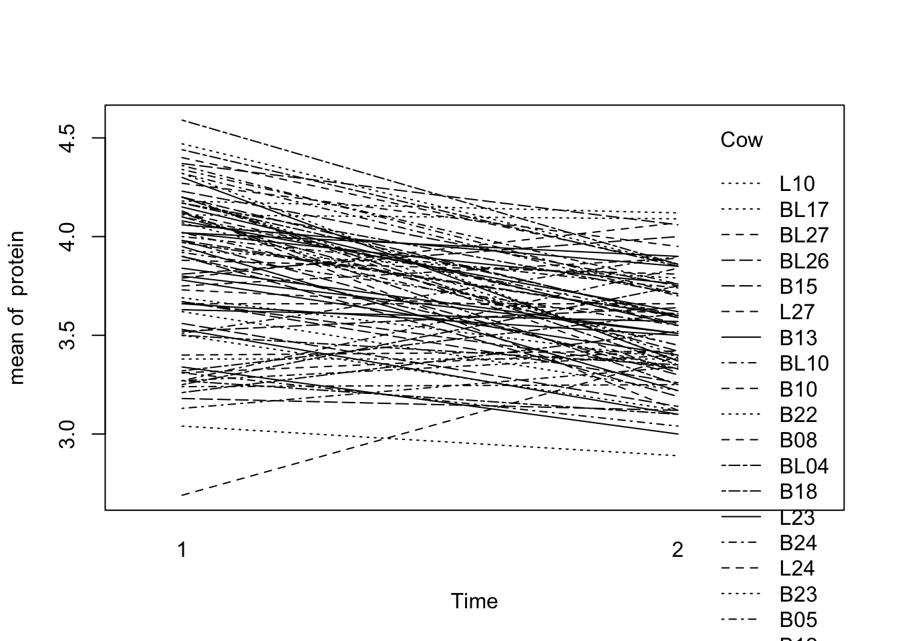
We will now do a pooled T test and a paired T test on the data. Since cow “B20” has a missing protein value at time 2, we will delete this cow from the data set for now.
Milk12complete<-Milk12 %>% filter(Cow!="B20")
str(Milk12complete)'data.frame': 156 obs. of 4 variables:
$ protein: num 3.63 3.57 3.24 3.25 3.98 3.6 3.66 3.5 4.34 3.76 ...
$ Time : num 1 2 1 2 1 2 1 2 1 2 ...
$ Cow : Ord.factor w/ 79 levels "B04"<"B14"<"B03"<..: 25 25 4 4 3 3 1 1 16 16 ...
$ Diet : Factor w/ 3 levels "barley","barley+lupins",..: 1 1 1 1 1 1 1 1 1 1 ...
- attr(*, "formula")=Class 'formula' language protein ~ Time | Cow
.. ..- attr(*, ".Environment")=<environment: R_GlobalEnv>
- attr(*, "units")=List of 2
..$ x: chr "(weeks)"
..$ y: chr "(%)"
- attr(*, "outer")=Class 'formula' language ~Diet
.. ..- attr(*, ".Environment")=<environment: R_GlobalEnv>
- attr(*, "FUN")=function (x)
- attr(*, "order.groups")= logi TRUE(Note that dataset Milk12complete is added to the search list before Milk12, so R will look in Milk12Bcomplete first. Variables in Milk12 are “masked”.)
t.test(protein~Time,var.equal=T, data = Milk12complete)
Two Sample t-test
data: protein by Time
t = 5.3923, df = 154, p-value = 2.568e-07
alternative hypothesis: true difference in means is not equal to 0
95 percent confidence interval:
0.1910686 0.4120083
sample estimates:
mean in group 1 mean in group 2
3.834231 3.532692 t.test(protein~Time,paired=T, data = Milk12complete)
Paired t-test
data: protein by Time
t = 7.1354, df = 77, p-value = 4.601e-10
alternative hypothesis: true difference in means is not equal to 0
95 percent confidence interval:
0.2173894 0.3856875
sample estimates:
mean of the differences
0.3015385 Note that both T tests give highly significant results but the p value from the paired T test is much smaller: 2.610-7 vs. 4.610-10.
We can do equivalent analyses using ANOVA (Oneway and split-plot, respectively). This enables us to compare sums-of-squares of the ANOVA tables:
summary(aov(protein~Time, data = Milk12complete)) Df Sum Sq Mean Sq F value Pr(>F)
Time 1 3.546 3.546 29.08 2.57e-07 ***
Residuals 154 18.781 0.122
---
Signif. codes: 0 '***' 0.001 '**' 0.01 '*' 0.05 '.' 0.1 ' ' 1summary(aov(protein~Time+Error(Cow), data = Milk12complete))
Error: Cow
Df Sum Sq Mean Sq F value Pr(>F)
Residuals 77 13.42 0.1743
Error: Within
Df Sum Sq Mean Sq F value Pr(>F)
Time 1 3.546 3.546 50.91 4.6e-10 ***
Residuals 77 5.363 0.070
---
Signif. codes: 0 '***' 0.001 '**' 0.01 '*' 0.05 '.' 0.1 ' ' 1Note that SS(Residuals) of the One-way ANOVA is the same as the sum of the two SS residuals in the Split-plot ANOVA. It is split into a “between Cow” and “Within” part.
To get an idea about the distribution of protein for week 1 and week 2, we can produce a scatter plot and a boxplot by executing:
plot(protein~Time, data = Milk12complete)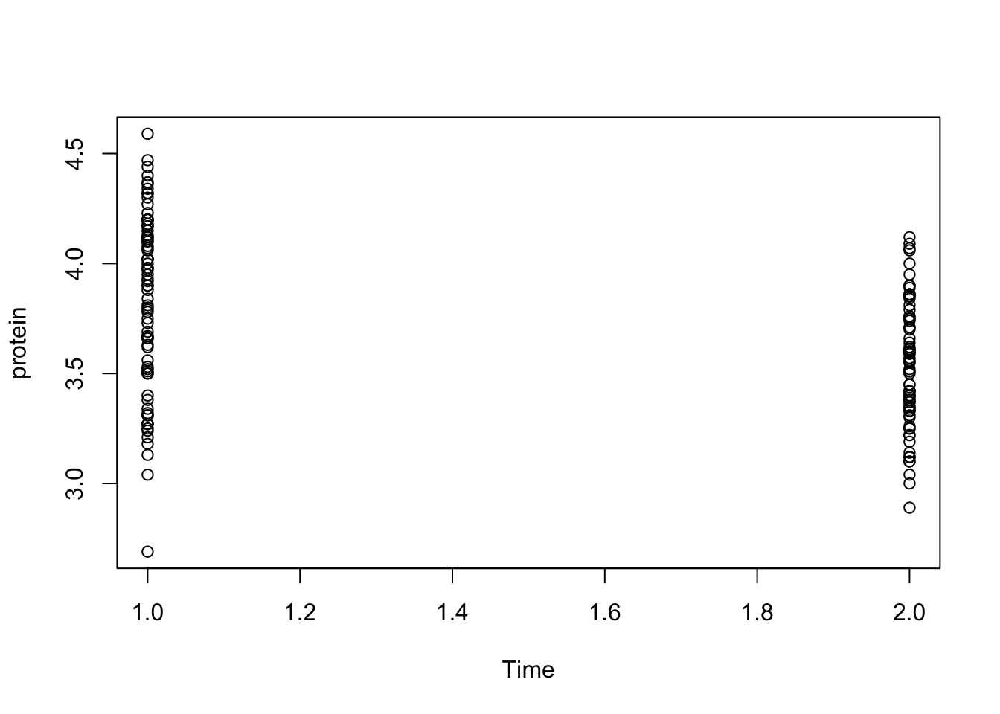
boxplot(protein~Time, data = Milk12complete)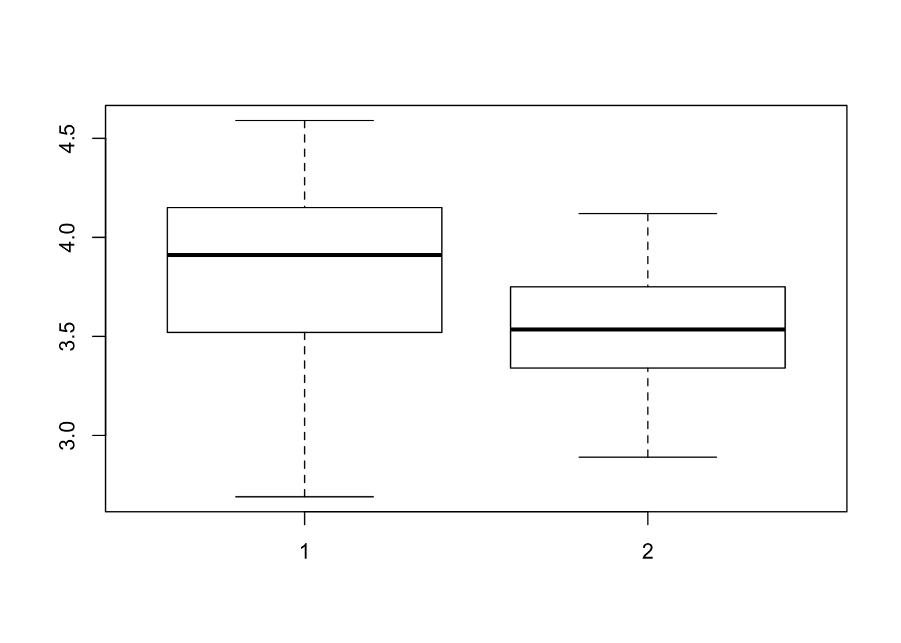
If we want to calculate the mean protein per diet for every week and make a plot of them, we just have to execute the commands
# tapply(protein,list(Diet,Time),mean)
Milk12complete %>%
group_by(Diet, Time) %>%
summarize(mean(protein))# A tibble: 6 x 3
# Groups: Diet [?]
Diet Time `mean(protein)`
<fct> <dbl> <dbl>
1 barley 1.00 3.89
2 barley 2.00 3.64
3 barley+lupins 1.00 3.86
4 barley+lupins 2.00 3.54
5 lupins 1.00 3.76
6 lupins 2.00 3.43with(Milk12complete,
interaction.plot(x.factor=Time,trace.factor=Diet,response=protein))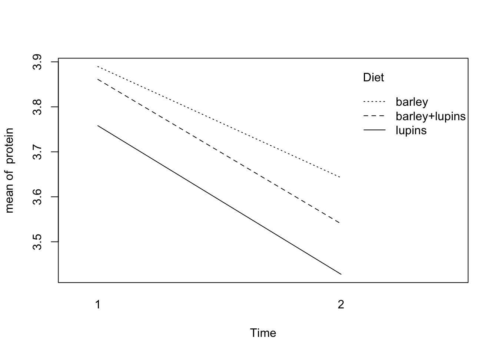
# tapply(protein,list(Diet,Time),var)
Milk12complete %>%
group_by(Time, Diet) %>%
summarize(mean = mean(protein), var = var(protein))# A tibble: 6 x 4
# Groups: Time [?]
Time Diet mean var
<dbl> <fct> <dbl> <dbl>
1 1.00 barley 3.89 0.149
2 1.00 barley+lupins 3.86 0.143
3 1.00 lupins 3.76 0.199
4 2.00 barley 3.64 0.0567
5 2.00 barley+lupins 3.54 0.0774
6 2.00 lupins 3.43 0.0890shows that the variances per diet in week 1 are much larger than in week 2.
To produce histograms for the protein observations per diet per week
library(lattice) #Contains the function histogram
histogram(~protein | Time*Diet, data = Milk12complete)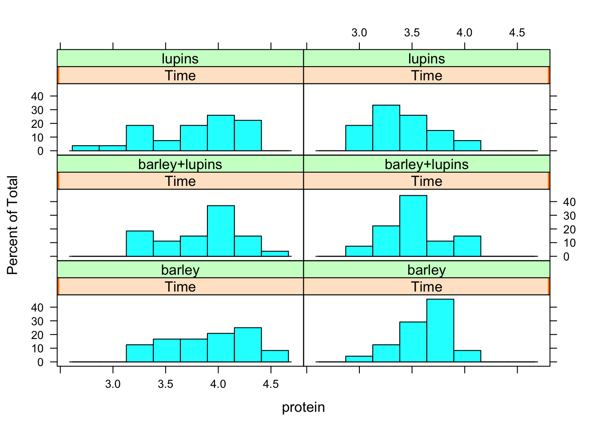
GGplot equivalent:
Milk12complete %>%
ggplot(aes(x = protein)) +
geom_histogram() +
facet_grid(Diet~Time, scales = "fixed")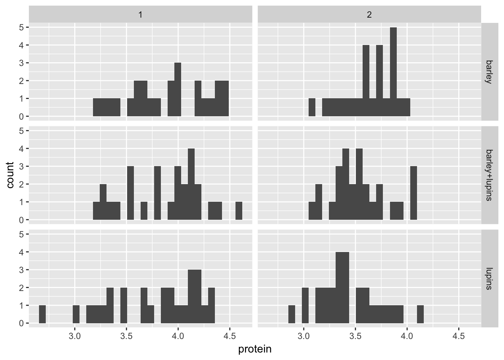
Comparing ggplot with lattice, we can see that the binwidth is pretty important
Let’s do 10 bins
Milk12complete %>%
ggplot(aes(x = protein)) +
geom_histogram(bins = 10) +
facet_grid(Diet~Time, scales = "fixed")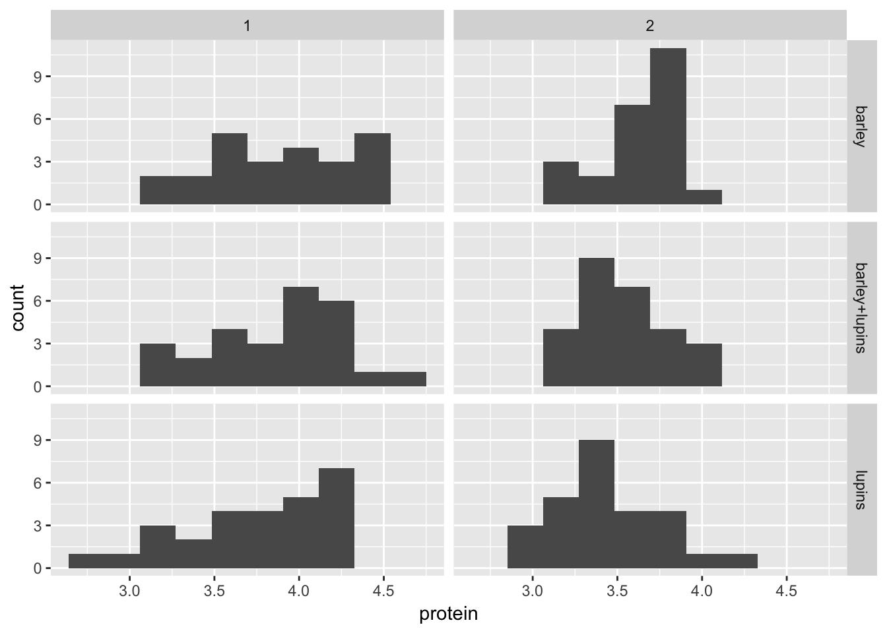
You can see that the histograms are more spread out in week 1.
We will now extend the analysis to the first 3 weeks, complete cases.
# Milk123complete<-Milk[Milk$Time<4 & Milk$Cow!="B20",]
Milk123complete<- Milk %>%
filter(Time<4 & Cow!="B20")
with(Milk123complete,
interaction.plot(x.factor=Time,trace.factor=Diet,response=protein))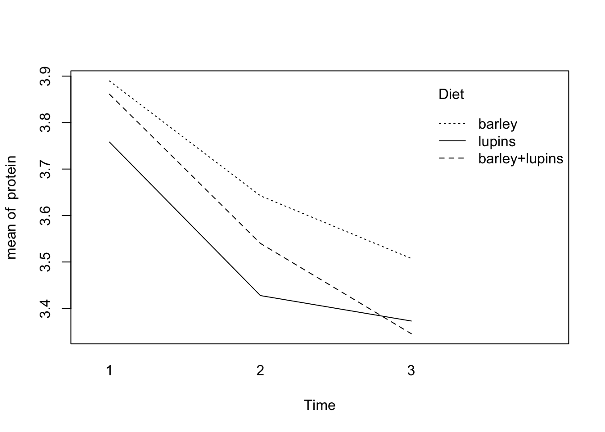
Let’s first investigate the protein profiles per cow graphically. (Normally we would have to tell R that our observations are grouped. We could accomplish this by creating a new groupedData set, where cow is our grouping variable: d.gr <-groupedData(protein~Time|Cow, data=Milk123complete) Here, the internal dataset Milk was already grouped.)
For a plot of all cows together (like the spaghetti interaction.plot), run
plot(Milk123complete,outer=~1,aspect=1,key=F)
This command does not work for me, probably because some package makes some alteration to the plot function (it’s not lattice).
Let’s do it ‘by hand’
Milk123complete %>%
ggplot(aes(x = Time, y = protein, col = Cow)) +
geom_line() +
theme(legend.position = "none")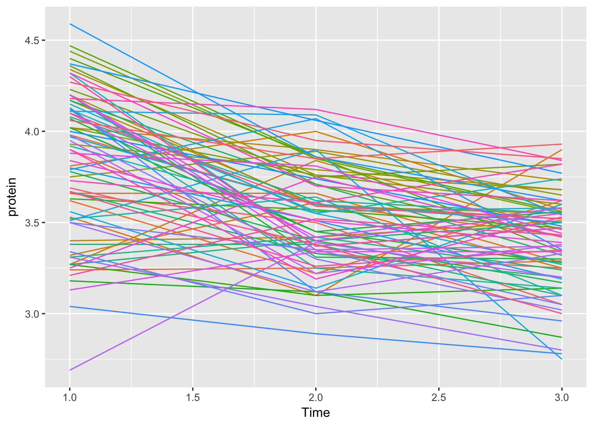
(key=F suppresses the elaborate non-informative legend.) For the same plot, but now per diet group, run
plot(Milk123complete,outer=~Diet,layout=c(3,1),aspect=1,key=F)
Again this doesn’t work, but GGplot2 can do the job
Milk123complete %>%
ggplot(aes(x = Time, y = protein, col = Cow)) +
geom_line() +
facet_grid(~Diet, scales = "fixed") +
theme(legend.position = "none")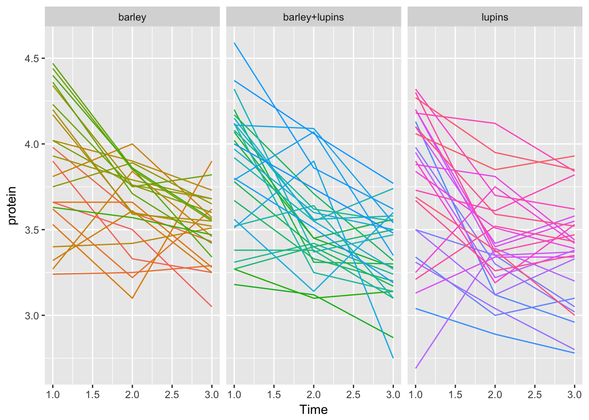
In the next part we will produce the slope as summary measure for each cow over the first three weeks of observation. To calculate our summary measure (the slope) for every cow we fit a linear model per cow. The “lmList” function (which works on groupedData objects) will calculate the slopes and intercepts for a linear regression model with protein as dependent variable and Time as predictor. This is done for each cow separately. The results are stored in the object “fits”. Typing “fits” then displays these results:
fits<-lmList(protein~Time|Cow, data=Milk123complete)
fitsCall:
Model: protein ~ Time | Cow
Data: Milk123complete
Coefficients:
(Intercept) Time
B04 4.013333 -3.050000e-01
B14 4.143333 -3.250000e-01
B03 4.220000 -2.750000e-01
B02 3.210000 2.500000e-02
B16 3.486667 -3.925231e-16
B17 3.913333 -1.900000e-01
B21 3.140000 1.850000e-01
B25 3.463333 -3.500000e-02
B15 4.033333 -1.200000e-01
B24 3.333333 9.500000e-02
B09 3.333333 5.500000e-02
B13 4.173333 -1.450000e-01
B07 4.413333 -3.250000e-01
B11 4.430000 -3.250000e-01
B05 4.586667 -3.300000e-01
B23 4.050000 -1.250000e-01
B10 3.863333 -5.000000e-02
B12 4.213333 -2.100000e-01
B18 4.836667 -4.450000e-01
B19 4.343333 -2.050000e-01
B06 4.770000 -4.700000e-01
B22 5.020000 -5.650000e-01
B08 4.780000 -4.200000e-01
B01 3.716667 -8.000000e-02
BL18 3.300000 -6.500000e-02
BL16 3.366667 -1.550000e-01
BL15 4.323333 -3.700000e-01
BL05 4.203333 -2.550000e-01
BL11 4.503333 -4.500000e-01
BL24 4.060000 -3.050000e-01
BL03 4.583333 -4.250000e-01
BL08 3.870000 -2.350000e-01
BL19 3.160000 1.150000e-01
BL01 3.566667 -1.400000e-01
BL21 3.393333 -3.500000e-02
BL14 4.280000 -2.650000e-01
BL22 4.483333 -4.900000e-01
BL13 3.840000 -2.100000e-01
BL23 3.916667 -9.000000e-02
BL06 4.570000 -4.250000e-01
BL12 4.293333 -2.700000e-01
BL09 4.536667 -4.400000e-01
BL20 4.160000 -2.350000e-01
BL07 3.393333 2.000000e-02
BL10 4.146667 -3.800000e-01
BL17 4.483333 -2.850000e-01
BL27 4.176667 -2.200000e-01
BL02 4.110000 -3.050000e-01
BL04 4.993333 -4.850000e-01
BL26 4.666667 -3.000000e-01
BL25 4.260000 -2.600000e-01
L07 3.163333 -1.300000e-01
L16 4.573333 -5.850000e-01
L14 3.386667 -1.200000e-01
L15 3.750000 -2.250000e-01
L09 4.393333 -4.800000e-01
L03 3.560000 -2.550000e-01
L19 3.486667 -8.500000e-02
L21 2.583333 2.550000e-01
L25 4.086667 -2.850000e-01
L02 4.470000 -4.150000e-01
L20 4.220000 -2.600000e-01
L04 3.060000 1.050000e-01
L11 4.366667 -3.250000e-01
L24 4.150000 -2.200000e-01
L08 4.030000 -2.250000e-01
L13 3.303333 8.500000e-02
L18 3.910000 -1.850000e-01
L06 4.580000 -3.500000e-01
L10 4.386667 -1.700000e-01
L05 3.630000 4.500000e-02
L22 4.543333 -4.150000e-01
L17 3.166667 1.100000e-01
L26 3.746667 -1.600000e-01
L12 4.316667 -2.900000e-01
L01 4.046667 -3.450000e-01
L27 4.443333 -2.100000e-01
L23 4.076667 -6.500000e-02
Degrees of freedom: 234 total; 78 residual
Residual standard error: 0.2315855Note that there is a substantial amount of variation in intercepts and slopes. (It might be worthwhile to try to take this into account. We’ll do that tomorrow.)
And here is a “little trick” to extract the slopes for every cow (using the fact that the slope is the second coefficient of the first part of the output):
slopes<-rep(0,78)
for(i in 1:78)slopes[i]<-fits[[i]][1]$coefficients[2](Note: the first of these two commands “initializes” slopes to be a vector consisting of 78 zeroes. The second command replaces these zeroes with the actual slopes.)
Here’s another way of doing this with the function map from purrr
slopes2 <- fits %>%
map("coefficients") %>% # grab coefficients
map_dbl(2) # grab 2nd element
cbind(slopes, slopes2)[1:10,] slopes slopes2
B04 -3.050000e-01 -3.050000e-01
B14 -3.250000e-01 -3.250000e-01
B03 -2.750000e-01 -2.750000e-01
B02 2.500000e-02 2.500000e-02
B16 -3.925231e-16 -3.925231e-16
B17 -1.900000e-01 -1.900000e-01
B21 1.850000e-01 1.850000e-01
B25 -3.500000e-02 -3.500000e-02
B15 -1.200000e-01 -1.200000e-01
B24 9.500000e-02 9.500000e-02This gives the same result, but depending on personal preference, the syntax may be a easier to read
From the output we see that the first 24 estimated lines belong to the cows on the Barley diet, the next 27 lines for the Mixed diet cows and the last 27 for cows on the Lupins diet. To link them to the diets, make a new variable:
DIET<-factor(c(rep(0,24),rep(1,27),rep(2,27)),labels=c("B","BL","L"))To obtain the overall ANOVA table and estimates for the mean slope per diet:
summary(aov(slopes~DIET)) Df Sum Sq Mean Sq F value Pr(>F)
DIET 2 0.0767 0.03837 1.163 0.318
Residuals 75 2.4733 0.03298 summary(lm(slopes~-1+DIET))
Call:
lm(formula = slopes ~ -1 + DIET)
Residuals:
Min 1Q Median 3Q Max
-0.39241 -0.13357 -0.01309 0.11018 0.44759
Coefficients:
Estimate Std. Error t value Pr(>|t|)
DIETB -0.19104 0.03707 -5.154 2.00e-06 ***
DIETBL -0.25778 0.03495 -7.376 1.82e-10 ***
DIETL -0.19259 0.03495 -5.511 4.82e-07 ***
---
Signif. codes: 0 '***' 0.001 '**' 0.01 '*' 0.05 '.' 0.1 ' ' 1
Residual standard error: 0.1816 on 75 degrees of freedom
Multiple R-squared: 0.5975, Adjusted R-squared: 0.5814
F-statistic: 37.11 on 3 and 75 DF, p-value: 8.21e-15If we do not use the slope as a summary measure, but take the observations themselves, we can again calculate means and variances by:
# tapply(protein, list(Diet,Time), mean)
# tapply(protein, list(Diet,Time), var)
Milk123complete %>%
group_by(Time, Diet) %>%
summarize(mean(protein), var(protein))# A tibble: 9 x 4
# Groups: Time [?]
Time Diet `mean(protein)` `var(protein)`
<dbl> <fct> <dbl> <dbl>
1 1.00 barley 3.89 0.149
2 1.00 barley+lupins 3.86 0.143
3 1.00 lupins 3.76 0.199
4 2.00 barley 3.64 0.0567
5 2.00 barley+lupins 3.54 0.0774
6 2.00 lupins 3.43 0.0890
7 3.00 barley 3.51 0.0391
8 3.00 barley+lupins 3.35 0.0624
9 3.00 lupins 3.37 0.0955We can test the main effects and their interaction using ANOVA (either Twoway or split-plot) with diet and time as factors:
summary(aov(protein~Diet*factor(Time), data = Milk123complete)) Df Sum Sq Mean Sq F value Pr(>F)
Diet 2 0.987 0.494 4.840 0.00875 **
factor(Time) 2 7.582 3.791 37.166 1.13e-14 ***
Diet:factor(Time) 4 0.225 0.056 0.552 0.69762
Residuals 225 22.950 0.102
---
Signif. codes: 0 '***' 0.001 '**' 0.01 '*' 0.05 '.' 0.1 ' ' 1summary(aov(protein~Diet*factor(Time)+Error(Cow), data = Milk123complete))
Error: Cow
Df Sum Sq Mean Sq F value Pr(>F)
Diet 2 0.987 0.4937 2.592 0.0816 .
Residuals 75 14.284 0.1905
---
Signif. codes: 0 '***' 0.001 '**' 0.01 '*' 0.05 '.' 0.1 ' ' 1
Error: Within
Df Sum Sq Mean Sq F value Pr(>F)
factor(Time) 2 7.582 3.791 65.620 <2e-16 ***
Diet:factor(Time) 4 0.225 0.056 0.975 0.423
Residuals 150 8.666 0.058
---
Signif. codes: 0 '***' 0.001 '**' 0.01 '*' 0.05 '.' 0.1 ' ' 1And finally, to fit a linear mixed effects (LME) model with random intercept:
lme.fit<-lme(fixed=protein~ Diet*factor(Time), random=~1|Cow, data = Milk123complete)
anova(lme.fit) numDF denDF F-value p-value
(Intercept) 1 150 15839.928 <.0001
Diet 2 75 2.592 0.0816
factor(Time) 2 150 65.620 <.0001
Diet:factor(Time) 4 150 0.975 0.4231summary(lme.fit)Linear mixed-effects model fit by REML
Data: Milk123complete
AIC BIC logLik
137.7676 175.3447 -57.88379
Random effects:
Formula: ~1 | Cow
(Intercept) Residual
StdDev: 0.2103056 0.2403568
Fixed effects: protein ~ Diet * factor(Time)
Value Std.Error DF t-value p-value
(Intercept) 3.889583 0.06519198 150 59.66353 0.0000
Dietbarley+lupins -0.028472 0.08959780 75 -0.31778 0.7515
Dietlupins -0.131435 0.08959780 75 -1.46695 0.1466
factor(Time)2 -0.247083 0.06938505 150 -3.56105 0.0005
factor(Time)3 -0.382083 0.06938505 150 -5.50671 0.0000
Dietbarley+lupins:factor(Time)2 -0.074028 0.09536062 150 -0.77629 0.4388
Dietlupins:factor(Time)2 -0.083287 0.09536062 150 -0.87339 0.3838
Dietbarley+lupins:factor(Time)3 -0.133472 0.09536062 150 -1.39966 0.1637
Dietlupins:factor(Time)3 -0.003102 0.09536062 150 -0.03253 0.9741
Correlation:
(Intr) Dtbrl+ Dtlpns fc(T)2 fc(T)3 D+:(T)2
Dietbarley+lupins -0.728
Dietlupins -0.728 0.529
factor(Time)2 -0.532 0.387 0.387
factor(Time)3 -0.532 0.387 0.387 0.500
Dietbarley+lupins:factor(Time)2 0.387 -0.532 -0.282 -0.728 -0.364
Dietlupins:factor(Time)2 0.387 -0.282 -0.532 -0.728 -0.364 0.529
Dietbarley+lupins:factor(Time)3 0.387 -0.532 -0.282 -0.364 -0.728 0.500
Dietlupins:factor(Time)3 0.387 -0.282 -0.532 -0.364 -0.728 0.265
D:(T)2 D+:(T)3
Dietbarley+lupins
Dietlupins
factor(Time)2
factor(Time)3
Dietbarley+lupins:factor(Time)2
Dietlupins:factor(Time)2
Dietbarley+lupins:factor(Time)3 0.265
Dietlupins:factor(Time)3 0.500 0.529
Standardized Within-Group Residuals:
Min Q1 Med Q3 Max
-3.208399150 -0.530625159 -0.006804944 0.523269323 2.125327364
Number of Observations: 234
Number of Groups: 78 From the estimates of the coefficient values, how can you calculate predictions for the protein values for each of the 3 diets, at each of the 3 time points? (Answer: add the appropriate coefficients to get: Time 1 Time 2 Time 3 Barley 3.889583 3.642500 3.507500 Barley + lupins 3.861111 3.540000 3.345556 Lupins 3.758148 3.427778 3.372963
For each time-point add intercept the interaction terms. e.g. for lupins, time 3
3.889583+(-.131435)+(-.382083)+(-.003102)[1] 3.372963To get them all in 2 (or 3 for pretty printing) lines of codes:
grid <- expand.grid(Diet = unique(Milk123complete$Diet),
Time = unique(factor(Milk123complete$Time)))
grid$predictions <- predict(lme.fit, newdata = grid, level = 0)
xtabs(predictions~Diet+Time, data = grid) Time
Diet 1 2 3
barley 3.889583 3.642500 3.507500
barley+lupins 3.861111 3.540000 3.345556
lupins 3.758148 3.427778 3.372963This works as follows:
expand.grid creates a data.frame of all possible combinations of the supplied vectorspredict will predict the protein based on the supplied model.
level = 0 is needed, which means ignore grouping (‘Cow’), otherwise the function will throw an error and ask for the grouping variable (so you will have to provide a Cow name)xtabs is just to print it nicelyClean up, by detaching the appropriate milk data files from the search list.
We didn’t attach, so no cleaning up required
The file Twisk1.dat contains longitudinal data concerning cholesterol measurements on several occasions. Furthermore, information about baseline values as well as time varying covariates is collected. id : patient number chol: serum cholesterol fitness: max oxygen uptake (baseline) skinfold: sum of four skin folds (time varying) smoke: does the patient smoke? (time varying, 0=no, 1=yes) gender: gender (factor, 1=male, 2=female) time: time in weeks (1-6)
Read the data into an R object and summarize it by
Twisk1<-read.table(fromParentDir("data/Twisk1.dat"),header=T)
summary(Twisk1) id chol fitness skinfold
Min. : 1.0 Min. :2.4 Min. :1.460 Min. : 1.570
1st Qu.: 81.0 1st Qu.:3.9 1st Qu.:1.830 1st Qu.: 2.530
Median :270.0 Median :4.4 Median :1.970 Median : 3.370
Mean :228.8 Mean :4.5 Mean :1.976 Mean : 3.743
3rd Qu.:367.0 3rd Qu.:5.0 3rd Qu.:2.140 3rd Qu.: 4.688
Max. :471.0 Max. :7.5 Max. :2.530 Max. :12.210
smoke gender time
Min. :0.0000 Min. :1.000 Min. :1.0
1st Qu.:0.0000 1st Qu.:1.000 1st Qu.:2.0
Median :0.0000 Median :2.000 Median :3.5
Mean :0.1746 Mean :1.531 Mean :3.5
3rd Qu.:0.0000 3rd Qu.:2.000 3rd Qu.:5.0
Max. :1.0000 Max. :2.000 Max. :6.0 Turn the variables id into a factor by
Twisk1$id<-factor(Twisk1$id)Do the same for smoke and gender, and attach Twisk1 to the search list.
Let’s do this with dplyr for convenience
Twisk1 %<>%
mutate_at(vars(id, smoke, gender), factor)
- Give mean and variance of the continuous variables chol, fitness and skinfold for all time points combined.
Here’s how to do this with dplyr
Twisk1 %>%
summarize_at(vars(chol, fitness, skinfold), funs(mean, var)) chol_mean fitness_mean skinfold_mean chol_var fitness_var skinfold_var
1 4.499773 1.975714 3.743424 0.6607037 0.04790329 2.341117Here with dplyr, purrr and data.table (admittably a little cumbersome, but this works for 30 variables and 20 functions too)
Twisk1 %>%
select(chol, fitness, skinfold) %>%
map(function(x) data.frame(mean(x), var(x))) %>%
data.table::rbindlist(idcol = "variable") variable mean.x. var.x.
1: chol 4.499773 0.66070369
2: fitness 1.975714 0.04790329
3: skinfold 3.743424 2.34111743
- Calculate these means and variances for every time point separately.
Just 1 extra line compared to a)
Twisk1 %>%
group_by(time) %>%
summarize_at(vars(chol, fitness, skinfold), funs(mean, var))# A tibble: 6 x 7
time chol_mean fitness_mean skinfold_mean chol_var fitness_var
<int> <dbl> <dbl> <dbl> <dbl> <dbl>
1 1 4.43 1.98 3.26 0.454 0.0482
2 2 4.32 1.98 3.36 0.443 0.0482
3 3 4.27 1.98 3.57 0.499 0.0482
4 4 4.17 1.98 3.76 0.493 0.0482
5 5 4.68 1.98 4.35 0.619 0.0482
6 6 5.13 1.98 4.16 0.856 0.0482
# ... with 1 more variable: skinfold_var <dbl>
- How many females are there in the sample? Use tapply with function table to obtain frequency tables at each time point..
table(Twisk1$time, Twisk1$gender)
1 2
1 69 78
2 69 78
3 69 78
4 69 78
5 69 78
6 69 78
- Use Twisk.gr<-groupedData(chol~time|id,data=Twisk1) to create a grouped dataset. Investigate graphically the individual profiles, also try to produce a graph where the profiles are shown by gender (outer=~gender). Warning: on some computers this may take some time, if you get bored press the escape key (several times).
Twisk1 %>%
ggplot(aes(x = time, y = chol, col = id)) +
geom_line() +
theme(legend.position = "none")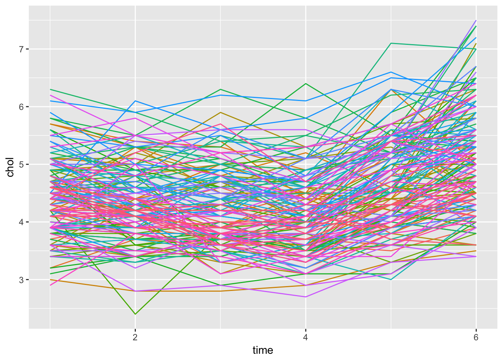
Twisk1 %>%
ggplot(aes(x = time, y = chol, col = id)) +
geom_line() +
facet_grid(~gender) +
theme(legend.position = "none")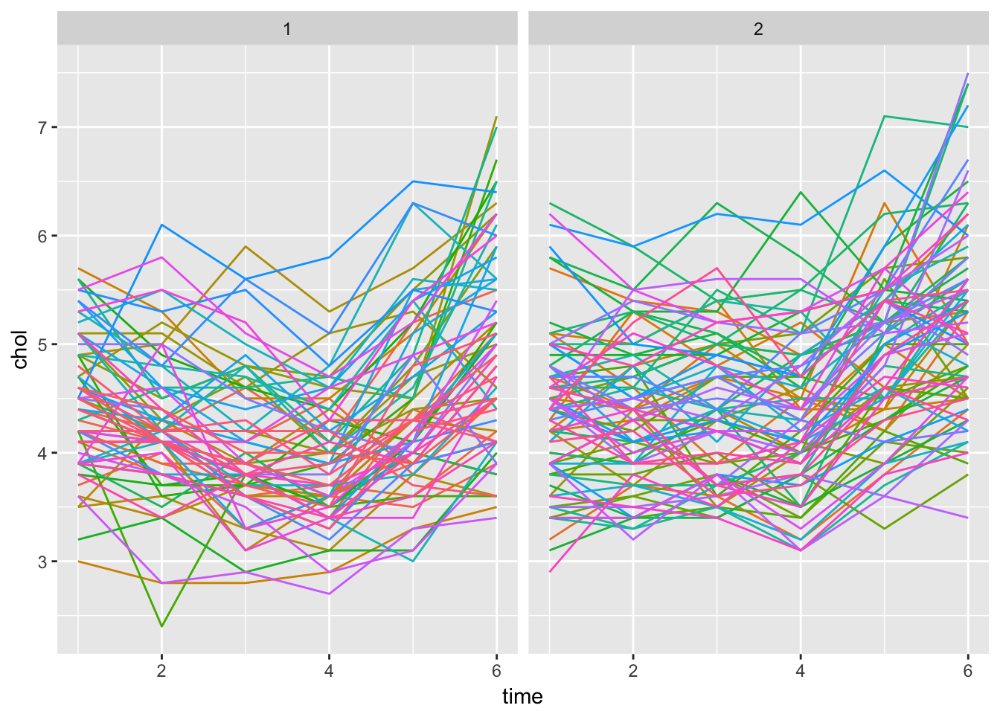
- Using a split plot ANOVA, test whether cholesterol levels change in time. (From question d, does a linear time effect seem feasible?)
A linear time effect does not seem correct, based on the graph. We will use time as a factor variable
fit <- aov(chol~factor(time)+Error(id), data = Twisk1)
summary(fit)
Error: id
Df Sum Sq Mean Sq F value Pr(>F)
Residuals 146 358.9 2.458
Error: Within
Df Sum Sq Mean Sq F value Pr(>F)
factor(time) 5 91.06 18.211 100.6 <2e-16 ***
Residuals 730 132.11 0.181
---
Signif. codes: 0 '***' 0.001 '**' 0.01 '*' 0.05 '.' 0.1 ' ' 1
- Is the effect of time for females the same as for males? Investigate by making an interaction plot and using split plot ANOVA.
We can already observe the ‘interaction’ from the faceted plot from ggplot. The slope seems equal for both sexes, which indicates no interaction
fit2 <- aov(chol~factor(time)*factor(gender)+Error(id), data = Twisk1)
summary(fit2)
Error: id
Df Sum Sq Mean Sq F value Pr(>F)
factor(gender) 1 15.2 15.159 6.394 0.0125 *
Residuals 145 343.8 2.371
---
Signif. codes: 0 '***' 0.001 '**' 0.01 '*' 0.05 '.' 0.1 ' ' 1
Error: Within
Df Sum Sq Mean Sq F value Pr(>F)
factor(time) 5 91.06 18.211 105.46 < 2e-16 ***
factor(time):factor(gender) 5 6.92 1.385 8.02 2.26e-07 ***
Residuals 725 125.19 0.173
---
Signif. codes: 0 '***' 0.001 '**' 0.01 '*' 0.05 '.' 0.1 ' ' 1Here it seems that there is an important interaction with gender. Maybe if we plot the means on each time point, this will become apparant
Twisk1 %>%
group_by(time, gender) %>%
summarize(chol = mean(chol)) %>%
ggplot(aes(x = time, y = chol, col = gender)) +
geom_line()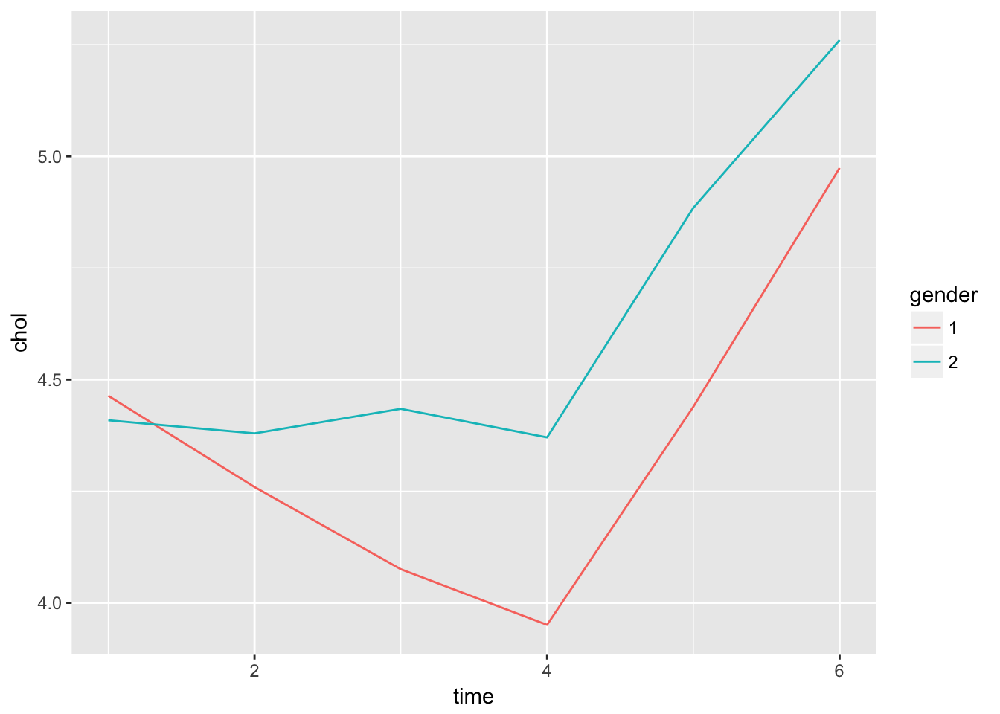
- Redo questions e and f using a linear mixed effect model with a random intercept. Compare the outputs and conclusions to those from e and f).
First without interaction
fit.lme <- lme(fixed = chol~factor(time), random = ~1|id, data = Twisk1)
summary(fit.lme)Linear mixed-effects model fit by REML
Data: Twisk1
AIC BIC logLik
1415.401 1453.604 -699.7004
Random effects:
Formula: ~1 | id
(Intercept) Residual
StdDev: 0.6160774 0.425416
Fixed effects: chol ~ factor(time)
Value Std.Error DF t-value p-value
(Intercept) 4.434694 0.06175055 730 71.81626 0.0000
factor(time)2 -0.111565 0.04962154 730 -2.24831 0.0249
factor(time)3 -0.168707 0.04962154 730 -3.39988 0.0007
factor(time)4 -0.261224 0.04962154 730 -5.26434 0.0000
factor(time)5 0.240816 0.04962154 730 4.85306 0.0000
factor(time)6 0.691156 0.04962154 730 13.92856 0.0000
Correlation:
(Intr) fct()2 fct()3 fct()4 fct()5
factor(time)2 -0.402
factor(time)3 -0.402 0.500
factor(time)4 -0.402 0.500 0.500
factor(time)5 -0.402 0.500 0.500 0.500
factor(time)6 -0.402 0.500 0.500 0.500 0.500
Standardized Within-Group Residuals:
Min Q1 Med Q3 Max
-2.75247731 -0.58922213 -0.04251889 0.56513990 3.62717923
Number of Observations: 882
Number of Groups: 147 Now with interaction
fit.lme2 <- lme(fixed = chol~factor(time)*gender, random = ~1|id, data = Twisk1)
summary(fit.lme2)Linear mixed-effects model fit by REML
Data: Twisk1
AIC BIC logLik
1400.317 1467.076 -686.1587
Random effects:
Formula: ~1 | id
(Intercept) Residual
StdDev: 0.6052576 0.4155439
Fixed effects: chol ~ factor(time) * gender
Value Std.Error DF t-value p-value
(Intercept) 4.463768 0.08838433 725 50.50407 0.0000
factor(time)2 -0.204348 0.07074689 725 -2.88844 0.0040
factor(time)3 -0.388406 0.07074689 725 -5.49008 0.0000
factor(time)4 -0.513043 0.07074689 725 -7.25182 0.0000
factor(time)5 -0.024638 0.07074689 725 -0.34825 0.7278
factor(time)6 0.510145 0.07074689 725 7.21085 0.0000
gender2 -0.054794 0.12133515 145 -0.45159 0.6522
factor(time)2:gender2 0.174861 0.09712224 725 1.80042 0.0722
factor(time)3:gender2 0.414047 0.09712224 725 4.26315 0.0000
factor(time)4:gender2 0.474582 0.09712224 725 4.88644 0.0000
factor(time)5:gender2 0.500279 0.09712224 725 5.15102 0.0000
factor(time)6:gender2 0.341137 0.09712224 725 3.51245 0.0005
Correlation:
(Intr) fct()2 fct()3 fct()4 fct()5 fct()6 gendr2
factor(time)2 -0.400
factor(time)3 -0.400 0.500
factor(time)4 -0.400 0.500 0.500
factor(time)5 -0.400 0.500 0.500 0.500
factor(time)6 -0.400 0.500 0.500 0.500 0.500
gender2 -0.728 0.292 0.292 0.292 0.292 0.292
factor(time)2:gender2 0.292 -0.728 -0.364 -0.364 -0.364 -0.364 -0.400
factor(time)3:gender2 0.292 -0.364 -0.728 -0.364 -0.364 -0.364 -0.400
factor(time)4:gender2 0.292 -0.364 -0.364 -0.728 -0.364 -0.364 -0.400
factor(time)5:gender2 0.292 -0.364 -0.364 -0.364 -0.728 -0.364 -0.400
factor(time)6:gender2 0.292 -0.364 -0.364 -0.364 -0.364 -0.728 -0.400
f()2:2 f()3:2 f()4:2 f()5:2
factor(time)2
factor(time)3
factor(time)4
factor(time)5
factor(time)6
gender2
factor(time)2:gender2
factor(time)3:gender2 0.500
factor(time)4:gender2 0.500 0.500
factor(time)5:gender2 0.500 0.500 0.500
factor(time)6:gender2 0.500 0.500 0.500 0.500
Standardized Within-Group Residuals:
Min Q1 Med Q3 Max
-3.16206297 -0.59878274 -0.01013853 0.53084464 3.76792278
Number of Observations: 882
Number of Groups: 147 Again, we have an indication of significant interaction between time and gender.
- After day 2: Formally compare the two LME model from part g, using AIC or a Likelihood Ratio test. (Note: we need to use ML instead of REML to get a valid comparison.) Also investigate a model with time and gender as main effects, without interaction. What happens if we leave out weeks 1 and 2?
sessionInfo()R version 3.4.3 (2017-11-30)
Platform: x86_64-apple-darwin15.6.0 (64-bit)
Running under: macOS Sierra 10.12.6
Matrix products: default
BLAS: /Library/Frameworks/R.framework/Versions/3.4/Resources/lib/libRblas.0.dylib
LAPACK: /Library/Frameworks/R.framework/Versions/3.4/Resources/lib/libRlapack.dylib
locale:
[1] en_US.UTF-8/en_US.UTF-8/en_US.UTF-8/C/en_US.UTF-8/en_US.UTF-8
attached base packages:
[1] stats graphics grDevices utils datasets methods base
other attached packages:
[1] lattice_0.20-35 nlme_3.1-131 data.table_1.10.4-3
[4] survival_2.41-3 bindrcpp_0.2 simpleboot_1.1-3
[7] boot_1.3-20 purrr_0.2.4 stringr_1.2.0
[10] ggplot2_2.2.1 dplyr_0.7.4 magrittr_1.5
[13] epistats_0.1.0
loaded via a namespace (and not attached):
[1] Rcpp_0.12.14 pillar_1.1.0 compiler_3.4.3 git2r_0.20.0
[5] plyr_1.8.4 bindr_0.1 tools_3.4.3 digest_0.6.13
[9] evaluate_0.10.1 tibble_1.4.1 gtable_0.2.0 pkgconfig_2.0.1
[13] rlang_0.1.6 psych_1.7.8 Matrix_1.2-12 cli_1.0.0
[17] parallel_3.4.3 yaml_2.1.16 perm_1.0-0.0 knitr_1.18
[21] rprojroot_1.2 grid_3.4.3 glue_1.2.0 R6_2.2.2
[25] foreign_0.8-69 rmarkdown_1.8 reshape2_1.4.3 tidyr_0.7.2
[29] backports_1.1.2 scales_0.5.0 htmltools_0.3.6 splines_3.4.3
[33] mnormt_1.5-5 assertthat_0.2.0 colorspace_1.3-2 labeling_0.3
[37] utf8_1.1.3 stringi_1.1.6 lazyeval_0.2.1 munsell_0.4.3
[41] broom_0.4.3 crayon_1.3.4 This R Markdown site was created with workflowr